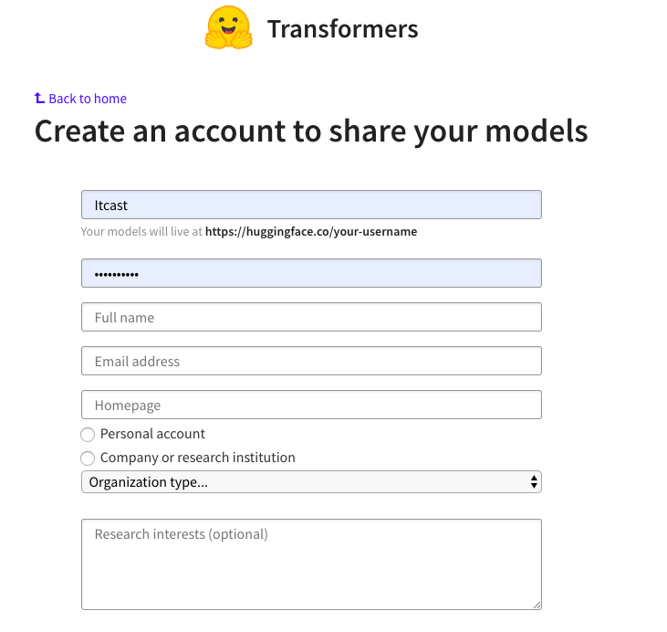

第二章:迁移学习
2.1 迁移学习理论
学习目标
- 了解迁移学习中的有关概念.
- 掌握迁移学习的两种迁移方式.
- 迁移学习中的有关概念:
- 预训练模型
- 微调
- 微调脚本
- 预训练模型(Pretrained model):
- 一般情况下预训练模型都是大型模型，具备复杂的网络结构，众多的参数量，以及在足够大的数据集下进行训练而产生的模型. 在NLP领域，预训练模型往往是语言模型，因为语言模型的训练是无监督的，可以获得大规模语料，同时语言模型又是许多典型NLP任务的基础，如机器翻译，文本生成，阅读理解等，常见的预训练模型有BERT, GPT, roBERTa, transformer-XL等.
- 微调(Fine-tuning):
- 根据给定的预训练模型，改变它的部分参数或者为其新增部分输出结构后，通过在小部分数据集上训练，来使整个模型更好的适应特定任务.
- 微调脚本(Fine-tuning script):
- 实现微调过程的代码文件。这些脚本文件中，应包括对预训练模型的调用，对微调参数的选定以及对微调结构的更改等，同时，因为微调是一个训练过程，它同样需要一些超参数的设定，以及损失函数和优化器的选取等, 因此微调脚本往往也包含了整个迁移学习的过程.
- 关于微调脚本的说明:
- 一般情况下，微调脚本应该由不同的任务类型开发者自己编写，但是由于目前研究的NLP任务类型（分类，提取，生成）以及对应的微调输出结构都是有限的，有些微调方式已经在很多数据集上被验证是有效的，因此微调脚本也可以使用已经完成的规范脚本.
- 两种迁移方式:
- 直接使用预训练模型，进行相同任务的处理，不需要调整参数或模型结构，这些模型开箱即用。但是这种情况一般只适用于普适任务, 如：fasttest工具包中预训练的词向量模型。另外，很多预训练模型开发者为了达到开箱即用的效果，将模型结构分各个部分保存为不同的预训练模型，提供对应的加载方法来完成特定目标.
- 更加主流的迁移学习方式是发挥预训练模型特征抽象的能力，然后再通过微调的方式，通过训练更新小部分参数以此来适应不同的任务。这种迁移方式需要提供小部分的标注数据来进行监督学习.
- 关于迁移方式的说明:
- 直接使用预训练模型的方式, 已经在fasttext的词向量迁移中学习. 接下来的迁移学习实践将主要讲解通过微调的方式进行迁移学习.
2.2 NLP中的标准数据集
学习目标
- 了解NLP中GLUE标准数据集合的相关知识.
- 掌握GLUE标准数据集合的下载方式, 数据样式及其对应的任务类型.
- GLUE数据集合的介绍:
- GLUE由纽约大学, 华盛顿大学, Google联合推出, 涵盖不同NLP任务类型, 截止至2020年1月其中包括11个子任务数据集, 成为衡量NLP研究发展的衡量标准.
GLUE数据集合包含以下数据集
- CoLA 数据集
- SST-2 数据集
- MRPC 数据集
- STS-B 数据集
- QQP 数据集
- MNLI 数据集
- SNLI 数据集
- QNLI 数据集
- RTE 数据集
- WNLI 数据集
- diagnostics数据集(官方未完善)
- GLUE数据集合的下载方式:
- 下载脚本代码:
''' Script for downloading all GLUE data.'''
import os
import sys
import shutil
import argparse
import tempfile
import urllib.request
import zipfile
TASKS = ["CoLA", "SST", "MRPC", "QQP", "STS", "MNLI", "SNLI", "QNLI", "RTE", "WNLI", "diagnostic"]
TASK2PATH = {"CoLA":'https://firebasestorage.googleapis.com/v0/b/mtl-sentence-representations.appspot.com/o/data%2FCoLA.zip?alt=media&token=46d5e637-3411-4188-bc44-5809b5bfb5f4',
"SST":'https://firebasestorage.googleapis.com/v0/b/mtl-sentence-representations.appspot.com/o/data%2FSST-2.zip?alt=media&token=aabc5f6b-e466-44a2-b9b4-cf6337f84ac8',
"MRPC":'https://firebasestorage.googleapis.com/v0/b/mtl-sentence-representations.appspot.com/o/data%2Fmrpc_dev_ids.tsv?alt=media&token=ec5c0836-31d5-48f4-b431-7480817f1adc',
"QQP":'https://firebasestorage.googleapis.com/v0/b/mtl-sentence-representations.appspot.com/o/data%2FQQP.zip?alt=media&token=700c6acf-160d-4d89-81d1-de4191d02cb5',
"STS":'https://firebasestorage.googleapis.com/v0/b/mtl-sentence-representations.appspot.com/o/data%2FSTS-B.zip?alt=media&token=bddb94a7-8706-4e0d-a694-1109e12273b5',
"MNLI":'https://firebasestorage.googleapis.com/v0/b/mtl-sentence-representations.appspot.com/o/data%2FMNLI.zip?alt=media&token=50329ea1-e339-40e2-809c-10c40afff3ce',
"SNLI":'https://firebasestorage.googleapis.com/v0/b/mtl-sentence-representations.appspot.com/o/data%2FSNLI.zip?alt=media&token=4afcfbb2-ff0c-4b2d-a09a-dbf07926f4df',
"QNLI": 'https://firebasestorage.googleapis.com/v0/b/mtl-sentence-representations.appspot.com/o/data%2FQNLIv2.zip?alt=media&token=6fdcf570-0fc5-4631-8456-9505272d1601',
"RTE":'https://firebasestorage.googleapis.com/v0/b/mtl-sentence-representations.appspot.com/o/data%2FRTE.zip?alt=media&token=5efa7e85-a0bb-4f19-8ea2-9e1840f077fb',
"WNLI":'https://firebasestorage.googleapis.com/v0/b/mtl-sentence-representations.appspot.com/o/data%2FWNLI.zip?alt=media&token=068ad0a0-ded7-4bd7-99a5-5e00222e0faf',
"diagnostic":'https://storage.googleapis.com/mtl-sentence-representations.appspot.com/tsvsWithoutLabels%2FAX.tsv?GoogleAccessId=firebase-adminsdk-0khhl@mtl-sentence-representations.iam.gserviceaccount.com&Expires=2498860800&Signature=DuQ2CSPt2Yfre0C%2BiISrVYrIFaZH1Lc7hBVZDD4ZyR7fZYOMNOUGpi8QxBmTNOrNPjR3z1cggo7WXFfrgECP6FBJSsURv8Ybrue8Ypt%2FTPxbuJ0Xc2FhDi%2BarnecCBFO77RSbfuz%2Bs95hRrYhTnByqu3U%2FYZPaj3tZt5QdfpH2IUROY8LiBXoXS46LE%2FgOQc%2FKN%2BA9SoscRDYsnxHfG0IjXGwHN%2Bf88q6hOmAxeNPx6moDulUF6XMUAaXCSFU%2BnRO2RDL9CapWxj%2BDl7syNyHhB7987hZ80B%2FwFkQ3MEs8auvt5XW1%2Bd4aCU7ytgM69r8JDCwibfhZxpaa4gd50QXQ%3D%3D'}
MRPC_TRAIN = 'https://dl.fbaipublicfiles.com/senteval/senteval_data/msr_paraphrase_train.txt'
MRPC_TEST = 'https://dl.fbaipublicfiles.com/senteval/senteval_data/msr_paraphrase_test.txt'
def download_and_extract(task, data_dir):
print("Downloading and extracting %s..." % task)
data_file = "%s.zip" % task
urllib.request.urlretrieve(TASK2PATH[task], data_file)
with zipfile.ZipFile(data_file) as zip_ref:
zip_ref.extractall(data_dir)
os.remove(data_file)
print("\tCompleted!")
def format_mrpc(data_dir, path_to_data):
print("Processing MRPC...")
mrpc_dir = os.path.join(data_dir, "MRPC")
if not os.path.isdir(mrpc_dir):
os.mkdir(mrpc_dir)
if path_to_data:
mrpc_train_file = os.path.join(path_to_data, "msr_paraphrase_train.txt")
mrpc_test_file = os.path.join(path_to_data, "msr_paraphrase_test.txt")
else:
print("Local MRPC data not specified, downloading data from %s" % MRPC_TRAIN)
mrpc_train_file = os.path.join(mrpc_dir, "msr_paraphrase_train.txt")
mrpc_test_file = os.path.join(mrpc_dir, "msr_paraphrase_test.txt")
urllib.request.urlretrieve(MRPC_TRAIN, mrpc_train_file)
urllib.request.urlretrieve(MRPC_TEST, mrpc_test_file)
assert os.path.isfile(mrpc_train_file), "Train data not found at %s" % mrpc_train_file
assert os.path.isfile(mrpc_test_file), "Test data not found at %s" % mrpc_test_file
urllib.request.urlretrieve(TASK2PATH["MRPC"], os.path.join(mrpc_dir, "dev_ids.tsv"))
dev_ids = []
with open(os.path.join(mrpc_dir, "dev_ids.tsv"), encoding="utf8") as ids_fh:
for row in ids_fh:
dev_ids.append(row.strip().split('\t'))
with open(mrpc_train_file, encoding="utf8") as data_fh, \
open(os.path.join(mrpc_dir, "train.tsv"), 'w', encoding="utf8") as train_fh, \
open(os.path.join(mrpc_dir, "dev.tsv"), 'w', encoding="utf8") as dev_fh:
header = data_fh.readline()
train_fh.write(header)
dev_fh.write(header)
for row in data_fh:
label, id1, id2, s1, s2 = row.strip().split('\t')
if [id1, id2] in dev_ids:
dev_fh.write("%s\t%s\t%s\t%s\t%s\n" % (label, id1, id2, s1, s2))
else:
train_fh.write("%s\t%s\t%s\t%s\t%s\n" % (label, id1, id2, s1, s2))
with open(mrpc_test_file, encoding="utf8") as data_fh, \
open(os.path.join(mrpc_dir, "test.tsv"), 'w', encoding="utf8") as test_fh:
header = data_fh.readline()
test_fh.write("index\t#1 ID\t#2 ID\t#1 String\t#2 String\n")
for idx, row in enumerate(data_fh):
label, id1, id2, s1, s2 = row.strip().split('\t')
test_fh.write("%d\t%s\t%s\t%s\t%s\n" % (idx, id1, id2, s1, s2))
print("\tCompleted!")
def download_diagnostic(data_dir):
print("Downloading and extracting diagnostic...")
if not os.path.isdir(os.path.join(data_dir, "diagnostic")):
os.mkdir(os.path.join(data_dir, "diagnostic"))
data_file = os.path.join(data_dir, "diagnostic", "diagnostic.tsv")
urllib.request.urlretrieve(TASK2PATH["diagnostic"], data_file)
print("\tCompleted!")
return
def get_tasks(task_names):
task_names = task_names.split(',')
if "all" in task_names:
tasks = TASKS
else:
tasks = []
for task_name in task_names:
assert task_name in TASKS, "Task %s not found!" % task_name
tasks.append(task_name)
return tasks
def main(arguments):
parser = argparse.ArgumentParser()
parser.add_argument('--data_dir', help='directory to save data to', type=str, default='glue_data')
parser.add_argument('--tasks', help='tasks to download data for as a comma separated string',
type=str, default='all')
parser.add_argument('--path_to_mrpc', help='path to directory containing extracted MRPC data, msr_paraphrase_train.txt and msr_paraphrase_text.txt',
type=str, default='')
args = parser.parse_args(arguments)
if not os.path.isdir(args.data_dir):
os.mkdir(args.data_dir)
tasks = get_tasks(args.tasks)
for task in tasks:
if task == 'MRPC':
format_mrpc(args.data_dir, args.path_to_mrpc)
elif task == 'diagnostic':
download_diagnostic(args.data_dir)
else:
download_and_extract(task, args.data_dir)
if __name__ == '__main__':
sys.exit(main(sys.argv[1:]))
- 运行脚本下载所有数据集:
# 假设你已经将以上代码copy到download_glue_data.py文件中
# 运行这个python脚本, 你将同目录下得到一个glue文件夹
python download_glue_data.py
- 输出效果:
Downloading and extracting CoLA...
Completed!
Downloading and extracting SST...
Completed!
Processing MRPC...
Local MRPC data not specified, downloading data from https://dl.fbaipublicfiles.com/senteval/senteval_data/msr_paraphrase_train.txt
Completed!
Downloading and extracting QQP...
Completed!
Downloading and extracting STS...
Completed!
Downloading and extracting MNLI...
Completed!
Downloading and extracting SNLI...
Completed!
Downloading and extracting QNLI...
Completed!
Downloading and extracting RTE...
Completed!
Downloading and extracting WNLI...
Completed!
Downloading and extracting diagnostic...
Completed!
GLUE数据集合中子数据集的样式及其任务类型
CoLA数据集文件样式
- CoLA/
- dev.tsv
- original/
- test.tsv
- train.tsv
- 文件样式说明:
- 在使用中常用到的文件是train.tsv, dev.tsv, test.tsv, 分别代表训练集, 验证集和测试集. 其中train.tsv与dev.tsv数据样式相同, 都是带有标签的数据, 其中test.tsv是不带有标签的数据.
- train.tsv数据样式:
...
gj04 1 She coughed herself awake as the leaf landed on her nose.
gj04 1 The worm wriggled onto the carpet.
gj04 1 The chocolate melted onto the carpet.
gj04 0 * The ball wriggled itself loose.
gj04 1 Bill wriggled himself loose.
bc01 1 The sinking of the ship to collect the insurance was very devious.
bc01 1 The ship's sinking was very devious.
bc01 0 * The ship's sinking to collect the insurance was very devious.
bc01 1 The testing of such drugs on oneself is too risky.
bc01 0 * This drug's testing on oneself is too risky.
...
- train.tsv数据样式说明:
- train.tsv中的数据内容共分为4列, 第一列数据, 如gj04, bc01等代表每条文本数据的来源即出版物代号; 第二列数据, 0或1, 代表每条文本数据的语法是否正确, 0代表不正确, 1代表正确; 第三列数据, '', 是作者最初的正负样本标记, 与第二列意义相同, ''表示不正确; 第四列即是被标注的语法使用是否正确的文本句子.
- test.tsv数据样式:
index sentence
0 Bill whistled past the house.
1 The car honked its way down the road.
2 Bill pushed Harry off the sofa.
3 the kittens yawned awake and played.
4 I demand that the more John eats, the more he pay.
5 If John eats more, keep your mouth shut tighter, OK?
6 His expectations are always lower than mine are.
7 The sooner you call, the more carefully I will word the letter.
8 The more timid he feels, the more people he interviews without asking questions of.
9 Once Janet left, Fred became a lot crazier.
...
- test.tsv数据样式说明:
- test.tsv中的数据内容共分为2列, 第一列数据代表每条文本数据的索引; 第二列数据代表用于测试的句子.
- CoLA数据集的任务类型:
- 二分类任务
- 评估指标为: MCC(马修斯相关系数, 在正负样本分布十分不均衡的情况下使用的二分类评估指标)
SST-2数据集文件样式
- SST-2/
- dev.tsv
- original/
- test.tsv
- train.tsv
- 文件样式说明:
- 在使用中常用到的文件是train.tsv, dev.tsv, test.tsv, 分别代表训练集, 验证集和测试集. 其中train.tsv与dev.tsv数据样式相同, 都是带有标签的数据, 其中test.tsv是不带有标签的数据.
- train.tsv数据样式:
sentence label
hide new secretions from the parental units 0
contains no wit , only labored gags 0
that loves its characters and communicates something rather beautiful about human nature 1
remains utterly satisfied to remain the same throughout 0
on the worst revenge-of-the-nerds clichés the filmmakers could dredge up 0
that 's far too tragic to merit such superficial treatment 0
demonstrates that the director of such hollywood blockbusters as patriot games can still turn out a small , personal film with an emotional wallop . 1
of saucy 1
a depressed fifteen-year-old 's suicidal poetry 0
...
- train.tsv数据样式说明:
- train.tsv中的数据内容共分为2列, 第一列数据代表具有感情色彩的评论文本; 第二列数据, 0或1, 代表每条文本数据是积极或者消极的评论, 0代表消极, 1代表积极.
- test.tsv数据样式:
index sentence
0 uneasy mishmash of styles and genres .
1 this film 's relationship to actual tension is the same as what christmas-tree flocking in a spray can is to actual snow : a poor -- if durable -- imitation .
2 by the end of no such thing the audience , like beatrice , has a watchful affection for the monster .
3 director rob marshall went out gunning to make a great one .
4 lathan and diggs have considerable personal charm , and their screen rapport makes the old story seem new .
5 a well-made and often lovely depiction of the mysteries of friendship .
6 none of this violates the letter of behan 's book , but missing is its spirit , its ribald , full-throated humor .
7 although it bangs a very cliched drum at times , this crowd-pleaser 's fresh dialogue , energetic music , and good-natured spunk are often infectious .
8 it is not a mass-market entertainment but an uncompromising attempt by one artist to think about another .
9 this is junk food cinema at its greasiest .
...
- test.tsv数据样式说明: * test.tsv中的数据内容共分为2列, 第一列数据代表每条文本数据的索引; 第二列数据代表用于测试的句子.
- SST-2数据集的任务类型:
- 二分类任务
- 评估指标为: ACC
MRPC数据集文件样式
- MRPC/
- dev.tsv
- test.tsv
- train.tsv
- dev_ids.tsv
- msr_paraphrase_test.txt
- msr_paraphrase_train.txt
- 文件样式说明:
- 在使用中常用到的文件是train.tsv, dev.tsv, test.tsv, 分别代表训练集, 验证集和测试集. 其中train.tsv与dev.tsv数据样式相同, 都是带有标签的数据, 其中test.tsv是不带有标签的数据.
- train.tsv数据样式:
Quality #1 ID #2 ID #1 String #2 String
1 702876 702977 Amrozi accused his brother , whom he called " the witness " , of deliberately distorting his evidence . Referring to him as only " the witness " , Amrozi accused his brother of deliberately distorting his evidence .
0 2108705 2108831 Yucaipa owned Dominick 's before selling the chain to Safeway in 1998 for $ 2.5 billion . Yucaipa bought Dominick 's in 1995 for $ 693 million and sold it to Safeway for $ 1.8 billion in 1998 .
1 1330381 1330521 They had published an advertisement on the Internet on June 10 , offering the cargo for sale , he added . On June 10 , the ship 's owners had published an advertisement on the Internet , offering the explosives for sale .
0 3344667 3344648 Around 0335 GMT , Tab shares were up 19 cents , or 4.4 % , at A $ 4.56 , having earlier set a record high of A $ 4.57 . Tab shares jumped 20 cents , or 4.6 % , to set a record closing high at A $ 4.57 .
1 1236820 1236712 The stock rose $ 2.11 , or about 11 percent , to close Friday at $ 21.51 on the New York Stock Exchange . PG & E Corp. shares jumped $ 1.63 or 8 percent to $ 21.03 on the New York Stock Exchange on Friday .
1 738533 737951 Revenue in the first quarter of the year dropped 15 percent from the same period a year earlier . With the scandal hanging over Stewart 's company , revenue the first quarter of the year dropped 15 percent from the same period a year earlier .
0 264589 264502 The Nasdaq had a weekly gain of 17.27 , or 1.2 percent , closing at 1,520.15 on Friday . The tech-laced Nasdaq Composite .IXIC rallied 30.46 points , or 2.04 percent , to 1,520.15 .
1 579975 579810 The DVD-CCA then appealed to the state Supreme Court . The DVD CCA appealed that decision to the U.S. Supreme Court .
...
- train.tsv数据样式说明:
- train.tsv中的数据内容共分为5列, 第一列数据, 0或1, 代表每对句子是否具有相同的含义, 0代表含义不相同, 1代表含义相同. 第二列和第三列分别代表每对句子的id, 第四列和第五列分别具有相同/不同含义的句子对.
- test.tsv数据样式:
index #1 ID #2 ID #1 String #2 String
0 1089874 1089925 PCCW 's chief operating officer , Mike Butcher , and Alex Arena , the chief financial officer , will report directly to Mr So . Current Chief Operating Officer Mike Butcher and Group Chief Financial Officer Alex Arena will report to So .
1 3019446 3019327 The world 's two largest automakers said their U.S. sales declined more than predicted last month as a late summer sales frenzy caused more of an industry backlash than expected . Domestic sales at both GM and No. 2 Ford Motor Co. declined more than predicted as a late summer sales frenzy prompted a larger-than-expected industry backlash .
2 1945605 1945824 According to the federal Centers for Disease Control and Prevention ( news - web sites ) , there were 19 reported cases of measles in the United States in 2002 . The Centers for Disease Control and Prevention said there were 19 reported cases of measles in the United States in 2002 .
3 1430402 1430329 A tropical storm rapidly developed in the Gulf of Mexico Sunday and was expected to hit somewhere along the Texas or Louisiana coasts by Monday night . A tropical storm rapidly developed in the Gulf of Mexico on Sunday and could have hurricane-force winds when it hits land somewhere along the Louisiana coast Monday night .
4 3354381 3354396 The company didn 't detail the costs of the replacement and repairs . But company officials expect the costs of the replacement work to run into the millions of dollars .
5 1390995 1391183 The settling companies would also assign their possible claims against the underwriters to the investor plaintiffs , he added . Under the agreement , the settling companies will also assign their potential claims against the underwriters to the investors , he added .
6 2201401 2201285 Air Commodore Quaife said the Hornets remained on three-minute alert throughout the operation . Air Commodore John Quaife said the security operation was unprecedented .
7 2453843 2453998 A Washington County man may have the countys first human case of West Nile virus , the health department said Friday . The countys first and only human case of West Nile this year was confirmed by health officials on Sept . 8 .
...
- test.tsv数据样式说明: * test.tsv中的数据内容共分为5列, 第一列数据代表每条文本数据的索引; 其余列的含义与train.tsv中相同.
- MRPC数据集的任务类型:
- 句子对二分类任务
- 评估指标为: ACC和F1
STS-B数据集文件样式
- STS-B/
- dev.tsv
- test.tsv
- train.tsv
- LICENSE.txt
- readme.txt
- original/
- 文件样式说明:
- 在使用中常用到的文件是train.tsv, dev.tsv, test.tsv, 分别代表训练集, 验证集和测试集. 其中train.tsv与dev.tsv数据样式相同, 都是带有标签的数据, 其中test.tsv是不带有标签的数据.
- train.tsv数据样式:
index genre filename year old_index source1 source2 sentence1 sentence2 score
0 main-captions MSRvid 2012test 0001 none none A plane is taking off. An air plane is taking off. 5.000
1 main-captions MSRvid 2012test 0004 none none A man is playing a large flute. A man is playing a flute. 3.800
2 main-captions MSRvid 2012test 0005 none none A man is spreading shreded cheese on a pizza. A man is spreading shredded cheese on an uncooked pizza. 3.800
3 main-captions MSRvid 2012test 0006 none none Three men are playing chess.Two men are playing chess. 2.600
4 main-captions MSRvid 2012test 0009 none none A man is playing the cello.A man seated is playing the cello. 4.250
5 main-captions MSRvid 2012test 0011 none none Some men are fighting. Two men are fighting. 4.250
6 main-captions MSRvid 2012test 0012 none none A man is smoking. A man is skating. 0.500
7 main-captions MSRvid 2012test 0013 none none The man is playing the piano. The man is playing the guitar. 1.600
8 main-captions MSRvid 2012test 0014 none none A man is playing on a guitar and singing. A woman is playing an acoustic guitar and singing. 2.200
9 main-captions MSRvid 2012test 0016 none none A person is throwing a cat on to the ceiling. A person throws a cat on the ceiling. 5.000
...
- train.tsv数据样式说明:
- train.tsv中的数据内容共分为10列, 第一列数据是数据索引; 第二列代表每对句子的来源, 如main-captions表示来自字幕; 第三列代表来源的具体保存文件名, 第四列代表出现时间(年); 第五列代表原始数据的索引; 第六列和第七列分别代表句子对原始来源; 第八列和第九列代表相似程度不同的句子对; 第十列代表句子对的相似程度由低到高, 值域范围是[0, 5].
- test.tsv数据样式:
index genre filename year old_index source1 source2 sentence1 sentence2
0 main-captions MSRvid 2012test 0024 none none A girl is styling her hair. A girl is brushing her hair.
1 main-captions MSRvid 2012test 0033 none none A group of men play soccer on the beach. A group of boys are playing soccer on the beach.
2 main-captions MSRvid 2012test 0045 none none One woman is measuring another woman's ankle. A woman measures another woman's ankle.
3 main-captions MSRvid 2012test 0063 none none A man is cutting up a cucumber. A man is slicing a cucumber.
4 main-captions MSRvid 2012test 0066 none none A man is playing a harp. A man is playing a keyboard.
5 main-captions MSRvid 2012test 0074 none none A woman is cutting onions. A woman is cutting tofu.
6 main-captions MSRvid 2012test 0076 none none A man is riding an electric bicycle. A man is riding a bicycle.
7 main-captions MSRvid 2012test 0082 none none A man is playing the drums. A man is playing the guitar.
8 main-captions MSRvid 2012test 0092 none none A man is playing guitar. A lady is playing the guitar.
9 main-captions MSRvid 2012test 0095 none none A man is playing a guitar. A man is playing a trumpet.
10 main-captions MSRvid 2012test 0096 none none A man is playing a guitar. A man is playing a trumpet.
...
- test.tsv数据样式说明:
- test.tsv中的数据内容共分为9列, 含义与train.tsv前9列相同.
- STS-B数据集的任务类型:
- 句子对多分类任务/句子对回归任务
- 评估指标为: Pearson-Spearman Corr
QQP数据集文件样式
- QQP/
- dev.tsv
- original/
- test.tsv
- train.tsv
- 文件样式说明:
- 在使用中常用到的文件是train.tsv, dev.tsv, test.tsv, 分别代表训练集, 验证集和测试集. 其中train.tsv与dev.tsv数据样式相同, 都是带有标签的数据, 其中test.tsv是不带有标签的数据.
- train.tsv数据样式:
id qid1 qid2 question1 question2 is_duplicate
133273 213221 213222 How is the life of a math student? Could you describe your own experiences?Which level of prepration is enough for the exam jlpt5? 0
402555 536040 536041 How do I control my horny emotions? How do you control your horniness? 1
360472 364011 490273 What causes stool color to change to yellow? What can cause stool to come out as little balls? 0
150662 155721 7256 What can one do after MBBS? What do i do after my MBBS ? 1
183004 279958 279959 Where can I find a power outlet for my laptop at Melbourne Airport? Would a second airport in Sydney, Australia be needed if a high-speed rail link was created between Melbourne and Sydney? 0
119056 193387 193388 How not to feel guilty since I am Muslim and I'm conscious we won't have sex together? I don't beleive I am bulimic, but I force throw up atleast once a day after I eat something and feel guilty. Should I tell somebody, and if so who? 0
356863 422862 96457 How is air traffic controlled? How do you become an air traffic controller?0
106969 147570 787 What is the best self help book you have read? Why? How did it change your life? What are the top self help books I should read? 1
...
- train.tsv数据样式说明:
- train.tsv中的数据内容共分为6列, 第一列代表文本数据索引; 第二列和第三列数据分别代表问题1和问题2的id; 第四列和第五列代表需要进行'是否重复'判定的句子对; 第六列代表上述问题是/不是重复性问题的标签, 0代表不重复, 1代表重复.
- test.tsv数据样式:
id question1 question2
0 Would the idea of Trump and Putin in bed together scare you, given the geopolitical implications? Do you think that if Donald Trump were elected President, he would be able to restore relations with Putin and Russia as he said he could, based on the rocky relationship Putin had with Obama and Bush?
1 What are the top ten Consumer-to-Consumer E-commerce online? What are the top ten Consumer-to-Business E-commerce online?
2 Why don't people simply 'Google' instead of asking questions on Quora? Why do people ask Quora questions instead of just searching google?
3 Is it safe to invest in social trade biz? Is social trade geniune?
4 If the universe is expanding then does matter also expand? If universe and space is expanding? Does that mean anything that occupies space is also expanding?
5 What is the plural of hypothesis? What is the plural of thesis?
6 What is the application form you need for launching a company? What is the application form you need for launching a company in Austria?
7 What is Big Theta? When should I use Big Theta as opposed to big O? Is O(Log n) close to O(n) or O(1)?
8 What are the health implications of accidentally eating a small quantity of aluminium foil?What are the implications of not eating vegetables?
...
- test.tsv数据样式说明:
- test.tsv中的数据内容共分为3列, 第一列数据代表每条文本数据的索引; 第二列和第三列数据代表用于测试的问题句子对.
- QQP数据集的任务类型:
- 句子对二分类任务
- 评估指标为: ACC/F1
(MNLI/SNLI)数据集文件样式
- (MNLI/SNLI)/
- dev_matched.tsv
- dev_mismatched.tsv
- original/
- test_matched.tsv
- test_mismatched.tsv
- train.tsv
- 文件样式说明:
- 在使用中常用到的文件是train.tsv, dev_matched.tsv, dev_mismatched.tsv, test_matched.tsv, test_mismatched.tsv分别代表训练集, 与训练集一同采集的验证集, 与训练集不是一同采集验证集, 与训练集一同采集的测试集, 与训练集不是一同采集测试集. 其中train.tsv与dev_matched.tsv和dev_mismatched.tsv数据样式相同, 都是带有标签的数据, 其中test_matched.tsv与test_mismatched.tsv数据样式相同, 都是不带有标签的数据.
- train.tsv数据样式:
index promptID pairID genre sentence1_binary_parse sentence2_binary_parse sentence1_parse sentence2_parse sentence1 sentence2 label1 gold_label
0 31193 31193n government ( ( Conceptually ( cream skimming ) ) ( ( has ( ( ( two ( basic dimensions ) ) - ) ( ( product and ) geography ) ) ) . ) ) ( ( ( Product and ) geography ) ( ( are ( what ( make ( cream ( skimming work ) ) ) ) ) . ) ) (ROOT (S (NP (JJ Conceptually) (NN cream) (NN skimming)) (VP (VBZ has) (NP (NP (CD two) (JJ basic) (NNS dimensions)) (: -) (NP (NN product) (CC and) (NN geography)))) (. .))) (ROOT (S (NP (NN Product) (CC and) (NN geography)) (VP (VBP are) (SBAR (WHNP (WP what)) (S (VP (VBP make) (NP (NP (NN cream)) (VP (VBG skimming) (NP (NN work)))))))) (. .))) Conceptually cream skimming has two basic dimensions - product and geography. Product and geography are what make cream skimming work. neutral neutral
1 101457 101457e telephone ( you ( ( know ( during ( ( ( the season ) and ) ( i guess ) ) ) ) ( at ( at ( ( your level ) ( uh ( you ( ( ( lose them ) ( to ( the ( next level ) ) ) ) ( if ( ( if ( they ( decide ( to ( recall ( the ( the ( parent team ) ) ) ) ) ) ) ) ( ( the Braves ) ( decide ( to ( call ( to ( ( recall ( a guy ) ) ( from ( ( triple A ) ( ( ( then ( ( a ( double ( A guy ) ) ) ( ( goes up ) ( to ( replace him ) ) ) ) ) and ) ( ( a ( single ( A guy ) ) ) ( ( goes up ) ( to ( replace him ) ) ) ) ) ) ) ) ) ) ) ) ) ) ) ) ) ) ) ) ) ) ) ( You ( ( ( ( lose ( the things ) ) ( to ( the ( following level ) ) ) ) ( if ( ( the people ) recall ) ) ) . ) ) (ROOT (S (NP (PRP you)) (VP (VBP know) (PP (IN during) (NP (NP (DT the) (NN season)) (CC and) (NP (FW i) (FW guess)))) (PP (IN at) (IN at) (NP (NP (PRP$ your) (NN level)) (SBAR (S (INTJ (UH uh)) (NP (PRP you)) (VP (VBP lose) (NP (PRP them)) (PP (TO to) (NP (DT the) (JJ next) (NN level))) (SBAR (IN if) (S (SBAR (IN if) (S (NP (PRP they)) (VP (VBP decide) (S (VP (TO to) (VP (VB recall) (NP (DT the) (DT the) (NN parent) (NN team)))))))) (NP (DT the) (NNPS Braves)) (VP (VBP decide) (S (VP (TO to) (VP (VB call) (S (VP (TO to) (VP (VB recall) (NP (DT a) (NN guy)) (PP (IN from) (NP (NP (RB triple) (DT A)) (SBAR (S (S (ADVP (RB then)) (NP (DT a) (JJ double) (NNP A) (NN guy)) (VP (VBZ goes) (PRT (RP up)) (S (VP (TO to) (VP (VB replace) (NP (PRP him))))))) (CC and) (S (NP (DT a) (JJ single) (NNP A) (NN guy)) (VP (VBZ goes) (PRT (RP up)) (S (VP (TO to) (VP (VB replace) (NP (PRP him)))))))))))))))))))))))))))) (ROOT (S (NP (PRP You)) (VP (VBP lose) (NP (DT the) (NNS things)) (PP (TO to) (NP (DT the) (JJ following) (NN level))) (SBAR (IN if) (S (NP (DT the) (NNS people)) (VP (VBP recall))))) (. .))) you know during the season and i guess at at your level uh you lose them to the next level if if they decide to recall the the parent team the Braves decide to call to recall a guy from triple A then a double A guy goes up to replace him and a single A guy goes up to replace him You lose the things to the following level if the people recall. entailment entailment
2 134793 134793e fiction ( ( One ( of ( our number ) ) ) ( ( will ( ( ( carry out ) ( your instructions ) ) minutely ) ) . ) ) ( ( ( A member ) ( of ( my team ) ) ) ( ( will ( ( execute ( your orders ) ) ( with ( immense precision ) ) ) ) . ) ) (ROOT (S (NP (NP (CD One)) (PP (IN of) (NP (PRP$ our) (NN number)))) (VP (MD will) (VP (VB carry) (PRT (RP out)) (NP (PRP$ your) (NNS instructions)) (ADVP (RB minutely)))) (. .))) (ROOT (S (NP (NP (DT A) (NN member)) (PP (IN of) (NP (PRP$ my) (NN team)))) (VP (MD will) (VP (VB execute) (NP (PRP$ your) (NNS orders)) (PP (IN with) (NP (JJ immense) (NN precision))))) (. .))) One of our number will carry out your instructions minutely. A member of my team will execute your orders with immense precision. entailment entailment
3 37397 37397e fiction ( ( How ( ( ( do you ) know ) ? ) ) ( ( All this ) ( ( ( is ( their information ) ) again ) . ) ) ) ( ( This information ) ( ( belongs ( to them ) ) . ) ) (ROOT (S (SBARQ (WHADVP (WRB How)) (SQ (VBP do) (NP (PRP you)) (VP (VB know))) (. ?)) (NP (PDT All) (DT this)) (VP (VBZ is) (NP (PRP$ their) (NN information)) (ADVP (RB again))) (. .))) (ROOT (S (NP (DT This) (NN information)) (VP (VBZ belongs) (PP (TO to) (NP (PRP them)))) (. .))) How do you know? All this is their information again. This information belongs to them. entailment entailment
...
- train.tsv数据样式说明:
- train.tsv中的数据内容共分为12列, 第一列代表文本数据索引; 第二列和第三列数据分别代表句子对的不同类型id; 第四列代表句子对的来源; 第五列和第六列代表具有句法结构分析的句子对表示; 第七列和第八列代表具有句法结构和词性标注的句子对表示, 第九列和第十列代表原始的句子对, 第十一和第十二列代表不同标准的标注方法产生的标签, 在这里，他们始终相同, 一共有三种类型的标签, neutral代表两个句子既不矛盾也不蕴含, entailment代表两个句子具有蕴含关系, contradiction代表两个句子观点矛盾.
- test_matched.tsv数据样式:
index promptID pairID genre sentence1_binary_parse sentence2_binary_parse sentence1_parse sentence2_parse sentence1 sentence2
0 31493 31493 travel ( ( ( ( ( ( ( ( Hierbas , ) ( ans seco ) ) , ) ( ans dulce ) ) , ) and ) frigola ) ( ( ( are just ) ( ( a ( few names ) ) ( worth ( ( keeping ( a look-out ) ) for ) ) ) ) . ) ) ( Hierbas ( ( is ( ( a name ) ( worth ( ( looking out ) for ) ) ) ) . ) ) (ROOT (S (NP (NP (NNS Hierbas)) (, ,) (NP (NN ans) (NN seco)) (, ,) (NP (NN ans) (NN dulce)) (, ,) (CC and) (NP (NN frigola))) (VP (VBP are) (ADVP (RB just)) (NP (NP (DT a) (JJ few) (NNS names)) (PP (JJ worth) (S (VP (VBG keeping) (NP (DT a) (NN look-out)) (PP (IN for))))))) (. .))) (ROOT (S (NP (NNS Hierbas)) (VP (VBZ is) (NP (NP (DT a) (NN name)) (PP (JJ worth) (S (VP (VBG looking) (PRT (RP out)) (PP (IN for))))))) (. .))) Hierbas, ans seco, ans dulce, and frigola are just a few names worth keeping a look-out for. Hierbas is a name worth looking out for.
1 92164 92164 government ( ( ( The extent ) ( of ( the ( behavioral effects ) ) ) ) ( ( would ( ( depend ( in ( part ( on ( ( the structure ) ( of ( ( ( the ( individual ( account program ) ) ) and ) ( any limits ) ) ) ) ) ) ) ) ( on ( accessing ( the funds ) ) ) ) ) . ) ) ( ( Many people ) ( ( would ( be ( very ( unhappy ( to ( ( loose control ) ( over ( their ( own money ) ) ) ) ) ) ) ) ) . ) ) (ROOT (S (NP (NP (DT The) (NN extent)) (PP (IN of) (NP (DT the) (JJ behavioral) (NNS effects)))) (VP (MD would) (VP (VB depend) (PP (IN in) (NP (NP (NN part)) (PP (IN on) (NP (NP (DT the) (NN structure)) (PP (IN of) (NP (NP (DT the) (JJ individual) (NN account) (NN program)) (CC and) (NP (DT any) (NNS limits)))))))) (PP (IN on) (S (VP (VBG accessing) (NP (DT the) (NNS funds))))))) (. .))) (ROOT (S (NP (JJ Many) (NNS people)) (VP (MD would) (VP (VB be) (ADJP (RB very) (JJ unhappy) (PP (TO to) (NP (NP (JJ loose) (NN control)) (PP (IN over) (NP (PRP$ their) (JJ own) (NN money)))))))) (. .))) The extent of the behavioral effects would depend in part on the structure of the individual account program and any limits on accessing the funds. Many people would be very unhappy to loose control over their own money.
2 9662 9662 government ( ( ( Timely access ) ( to information ) ) ( ( is ( in ( ( the ( best interests ) ) ( of ( ( ( both GAO ) and ) ( the agencies ) ) ) ) ) ) . ) ) ( It ( ( ( is ( in ( ( everyone 's ) ( best interest ) ) ) ) ( to ( ( have access ) ( to ( information ( in ( a ( timely manner ) ) ) ) ) ) ) ) . ) ) (ROOT (S (NP (NP (JJ Timely) (NN access)) (PP (TO to) (NP (NN information)))) (VP (VBZ is) (PP (IN in) (NP (NP (DT the) (JJS best) (NNS interests)) (PP (IN of) (NP (NP (DT both) (NNP GAO)) (CC and) (NP (DT the) (NNS agencies))))))) (. .))) (ROOT (S (NP (PRP It)) (VP (VBZ is) (PP (IN in) (NP (NP (NN everyone) (POS 's)) (JJS best) (NN interest))) (S (VP (TO to) (VP (VB have) (NP (NN access)) (PP (TO to) (NP (NP (NN information)) (PP (IN in) (NP (DT a) (JJ timely) (NN manner))))))))) (. .))) Timely access to information is in the best interests of both GAO and the agencies. It is in everyone's best interest to have access to information in a timely manner.
3 5991 5991 travel ( ( Based ( in ( ( the ( Auvergnat ( spa town ) ) ) ( of Vichy ) ) ) ) ( , ( ( the ( French government ) ) ( often ( ( ( ( proved ( more zealous ) ) ( than ( its masters ) ) ) ( in ( ( ( suppressing ( civil liberties ) ) and ) ( ( drawing up ) ( anti-Jewish legislation ) ) ) ) ) . ) ) ) ) ) ( ( The ( French government ) ) ( ( passed ( ( anti-Jewish laws ) ( aimed ( at ( helping ( the Nazi ) ) ) ) ) ) . ) ) (ROOT (S (PP (VBN Based) (PP (IN in) (NP (NP (DT the) (NNP Auvergnat) (NN spa) (NN town)) (PP (IN of) (NP (NNP Vichy)))))) (, ,) (NP (DT the) (JJ French) (NN government)) (ADVP (RB often)) (VP (VBD proved) (NP (JJR more) (NNS zealous)) (PP (IN than) (NP (PRP$ its) (NNS masters))) (PP (IN in) (S (VP (VP (VBG suppressing) (NP (JJ civil) (NNS liberties))) (CC and) (VP (VBG drawing) (PRT (RP up)) (NP (JJ anti-Jewish) (NN legislation))))))) (. .))) (ROOT (S (NP (DT The) (JJ French) (NN government)) (VP (VBD passed) (NP (NP (JJ anti-Jewish) (NNS laws)) (VP (VBN aimed) (PP (IN at) (S (VP (VBG helping) (NP (DT the) (JJ Nazi)))))))) (. .))) Based in the Auvergnat spa town of Vichy, the French government often proved more zealous than its masters in suppressing civil liberties and drawing up anti-Jewish legislation. The French government passed anti-Jewish laws aimed at helping the Nazi.
...
- test_matched.tsv数据样式说明:
- test_matched.tsv中的数据内容共分为10列, 与train.tsv的前10列含义相同.
- (MNLI/SNLI)数据集的任务类型:
- 句子对多分类任务
- 评估指标为: ACC
(QNLI/RTE/WNLI)数据集文件样式
* QNLI, RTE, WNLI三个数据集的样式基本相同.
- (QNLI/RTE/WNLI)/
- dev.tsv
- test.tsv
- train.tsv
- 文件样式说明:
- 在使用中常用到的文件是train.tsv, dev.tsv, test.tsv, 分别代表训练集, 验证集和测试集. 其中train.tsv与dev.tsv数据样式相同, 都是带有标签的数据, 其中test.tsv是不带有标签的数据.
- QNLI中的train.tsv数据样式:
index question sentence label
0 When did the third Digimon series begin? Unlike the two seasons before it and most of the seasons that followed, Digimon Tamers takes a darker and more realistic approach to its story featuring Digimon who do not reincarnate after their deaths and more complex character development in the original Japanese. not_entailment
1 Which missile batteries often have individual launchers several kilometres from one another? When MANPADS is operated by specialists, batteries may have several dozen teams deploying separately in small sections; self-propelled air defence guns may deploy in pairs. not_entailment
2 What two things does Popper argue Tarski's theory involves in an evaluation of truth? He bases this interpretation on the fact that examples such as the one described above refer to two things: assertions and the facts to which they refer. entailment
3 What is the name of the village 9 miles north of Calafat where the Ottoman forces attacked the Russians? On 31 December 1853, the Ottoman forces at Calafat moved against the Russian force at Chetatea or Cetate, a small village nine miles north of Calafat, and engaged them on 6 January 1854. entailment
4 What famous palace is located in London? London contains four World Heritage Sites: the Tower of London; Kew Gardens; the site comprising the Palace of Westminster, Westminster Abbey, and St Margaret's Church; and the historic settlement of Greenwich (in which the Royal Observatory, Greenwich marks the Prime Meridian, 0° longitude, and GMT). not_entailment
5 When is the term 'German dialects' used in regard to the German language? When talking about the German language, the term German dialects is only used for the traditional regional varieties. entailment
6 What was the name of the island the English traded to the Dutch in return for New Amsterdam? At the end of the Second Anglo-Dutch War, the English gained New Amsterdam (New York) in North America in exchange for Dutch control of Run, an Indonesian island. entailment
7 How were the Portuguese expelled from Myanmar? From the 1720s onward, the kingdom was beset with repeated Meithei raids into Upper Myanmar and a nagging rebellion in Lan Na. not_entailment
8 What does the word 'customer' properly apply to? The bill also required rotation of principal maintenance inspectors and stipulated that the word "customer" properly applies to the flying public, not those entities regulated by the FAA. entailment
...
- RTE中的train.tsv数据样式:
index sentence1 sentence2 label
0 No Weapons of Mass Destruction Found in Iraq Yet. Weapons of Mass Destruction Found in Iraq. not_entailment
1 A place of sorrow, after Pope John Paul II died, became a place of celebration, as Roman Catholic faithful gathered in downtown Chicago to mark the installation of new Pope Benedict XVI.Pope Benedict XVI is the new leader of the Roman Catholic Church. entailment
2 Herceptin was already approved to treat the sickest breast cancer patients, and the company said, Monday, it will discuss with federal regulators the possibility of prescribing the drug for more breast cancer patients. Herceptin can be used to treat breast cancer. entailment
3 Judie Vivian, chief executive at ProMedica, a medical service company that helps sustain the 2-year-old Vietnam Heart Institute in Ho Chi Minh City (formerly Saigon), said that so far about 1,500 children have received treatment. The previous name of Ho Chi Minh City was Saigon.entailment
4 A man is due in court later charged with the murder 26 years ago of a teenager whose case was the first to be featured on BBC One's Crimewatch. Colette Aram, 16, was walking to her boyfriend's house in Keyworth, Nottinghamshire, on 30 October 1983 when she disappeared. Her body was later found in a field close to her home. Paul Stewart Hutchinson, 50, has been charged with murder and is due before Nottingham magistrates later. Paul Stewart Hutchinson is accused of having stabbed a girl. not_entailment
5 Britain said, Friday, that it has barred cleric, Omar Bakri, from returning to the country from Lebanon, where he was released by police after being detained for 24 hours. Bakri was briefly detained, but was released. entailment
6 Nearly 4 million children who have at least one parent who entered the U.S. illegally were born in the United States and are U.S. citizens as a result, according to the study conducted by the Pew Hispanic Center. That's about three quarters of the estimated 5.5 million children of illegal immigrants inside the United States, according to the study. About 1.8 million children of undocumented immigrants live in poverty, the study found. Three quarters of U.S. illegal immigrants have children. not_entailment
7 Like the United States, U.N. officials are also dismayed that Aristide killed a conference called by Prime Minister Robert Malval in Port-au-Prince in hopes of bringing all the feuding parties together. Aristide had Prime Minister Robert Malval murdered in Port-au-Prince. not_entailment
8 WASHINGTON -- A newly declassified narrative of the Bush administration's advice to the CIA on harsh interrogations shows that the small group of Justice Department lawyers who wrote memos authorizing controversial interrogation techniques were operating not on their own but with direction from top administration officials, including then-Vice President Dick Cheney and national security adviser Condoleezza Rice. At the same time, the narrative suggests that then-Defense Secretary Donald H. Rumsfeld and then-Secretary of State Colin Powell were largely left out of the decision-making process. Dick Cheney was the Vice President of Bush. entailment
- WNLI中的train.tsv数据样式:
index sentence1 sentence2 label
0 I stuck a pin through a carrot. When I pulled the pin out, it had a hole. The carrot had a hole. 1
1 John couldn't see the stage with Billy in front of him because he is so short. John is so short. 1
2 The police arrested all of the gang members. They were trying to stop the drug trade in the neighborhood. The police were trying to stop the drug trade in the neighborhood. 1
3 Steve follows Fred's example in everything. He influences him hugely. Steve influences him hugely. 0
4 When Tatyana reached the cabin, her mother was sleeping. She was careful not to disturb her, undressing and climbing back into her berth. mother was careful not to disturb her, undressing and climbing back into her berth. 0
5 George got free tickets to the play, but he gave them to Eric, because he was particularly eager to see it. George was particularly eager to see it. 0
6 John was jogging through the park when he saw a man juggling watermelons. He was very impressive. John was very impressive. 0
7 I couldn't put the pot on the shelf because it was too tall. The pot was too tall. 1
8 We had hoped to place copies of our newsletter on all the chairs in the auditorium, but there were simply not enough of them. There were simply not enough copies of the newsletter. 1
- (QNLI/RTE/WNLI)中的train.tsv数据样式说明:
- train.tsv中的数据内容共分为4列, 第一列代表文本数据索引; 第二列和第三列数据代表需要进行'是否蕴含'判定的句子对; 第四列数据代表两个句子是否具有蕴含关系, 0/not_entailment代表不是蕴含关系, 1/entailment代表蕴含关系.
- QNLI中的test.tsv数据样式:
index question sentence
0 What organization is devoted to Jihad against Israel? For some decades prior to the First Palestine Intifada in 1987, the Muslim Brotherhood in Palestine took a "quiescent" stance towards Israel, focusing on preaching, education and social services, and benefiting from Israel's "indulgence" to build up a network of mosques and charitable organizations.
1 In what century was the Yarrow-Schlick-Tweedy balancing system used? In the late 19th century, the Yarrow-Schlick-Tweedy balancing 'system' was used on some marine triple expansion engines.
2 The largest brand of what store in the UK is located in Kingston Park? Close to Newcastle, the largest indoor shopping centre in Europe, the MetroCentre, is located in Gateshead.
3 What does the IPCC rely on for research? In principle, this means that any significant new evidence or events that change our understanding of climate science between this deadline and publication of an IPCC report cannot be included.
4 What is the principle about relating spin and space variables? Thus in the case of two fermions there is a strictly negative correlation between spatial and spin variables, whereas for two bosons (e.g. quanta of electromagnetic waves, photons) the correlation is strictly positive.
5 Which network broadcasted Super Bowl 50 in the U.S.? CBS broadcast Super Bowl 50 in the U.S., and charged an average of $5 million for a 30-second commercial during the game.
6 What did the museum acquire from the Royal College of Science? To link this to the rest of the museum, a new entrance building was constructed on the site of the former boiler house, the intended site of the Spiral, between 1978 and 1982.
7 What is the name of the old north branch of the Rhine? From Wijk bij Duurstede, the old north branch of the Rhine is called Kromme Rijn ("Bent Rhine") past Utrecht, first Leidse Rijn ("Rhine of Leiden") and then, Oude Rijn ("Old Rhine").
8 What was one of Luther's most personal writings? It remains in use today, along with Luther's hymns and his translation of the Bible.
...
- (RTE/WNLI)中的test.tsv数据样式:
index sentence1 sentence2
0 Maude and Dora had seen the trains rushing across the prairie, with long, rolling puffs of black smoke streaming back from the engine. Their roars and their wild, clear whistles could be heard from far away. Horses ran away when they came in sight. Horses ran away when Maude and Dora came in sight.
1 Maude and Dora had seen the trains rushing across the prairie, with long, rolling puffs of black smoke streaming back from the engine. Their roars and their wild, clear whistles could be heard from far away. Horses ran away when they came in sight. Horses ran away when the trains came in sight.
2 Maude and Dora had seen the trains rushing across the prairie, with long, rolling puffs of black smoke streaming back from the engine. Their roars and their wild, clear whistles could be heard from far away. Horses ran away when they came in sight. Horses ran away when the puffs came in sight.
3 Maude and Dora had seen the trains rushing across the prairie, with long, rolling puffs of black smoke streaming back from the engine. Their roars and their wild, clear whistles could be heard from far away. Horses ran away when they came in sight. Horses ran away when the roars came in sight.
4 Maude and Dora had seen the trains rushing across the prairie, with long, rolling puffs of black smoke streaming back from the engine. Their roars and their wild, clear whistles could be heard from far away. Horses ran away when they came in sight. Horses ran away when the whistles came in sight.
5 Maude and Dora had seen the trains rushing across the prairie, with long, rolling puffs of black smoke streaming back from the engine. Their roars and their wild, clear whistles could be heard from far away. Horses ran away when they came in sight. Horses ran away when the horses came in sight.
6 Maude and Dora had seen the trains rushing across the prairie, with long, rolling puffs of black smoke streaming back from the engine. Their roars and their wild, clear whistles could be heard from far away. Horses ran away when they saw a train coming. Maude and Dora saw a train coming.
7 Maude and Dora had seen the trains rushing across the prairie, with long, rolling puffs of black smoke streaming back from the engine. Their roars and their wild, clear whistles could be heard from far away. Horses ran away when they saw a train coming. The trains saw a train coming.
8 Maude and Dora had seen the trains rushing across the prairie, with long, rolling puffs of black smoke streaming back from the engine. Their roars and their wild, clear whistles could be heard from far away. Horses ran away when they saw a train coming. The puffs saw a train coming.
...
- (QNLI/RTE/WNLI)中的test.tsv数据样式说明:
- test.tsv中的数据内容共分为3列, 第一列数据代表每条文本数据的索引; 第二列和第三列数据代表需要进行'是否蕴含'判定的句子对.
- (QNLI/RTE/WNLI)数据集的任务类型:
- 句子对二分类任务
- 评估指标为: ACC
小节总结
-
学习了GLUE数据集合的介绍:
- GLUE由纽约大学, 华盛顿大学, Google联合推出, 涵盖不同NLP任务类型, 截止至2020年1月其中包括11个子任务数据集, 成为衡量NLP研究发展的衡量标准.
-
GLUE数据集合包含以下数据集:
- CoLA 数据集
- SST-2 数据集
- MRPC 数据集
- STS-B 数据集
- QQP 数据集
- MNLI 数据集
- SNLI 数据集
- QNLI 数据集
- RTE 数据集
- WNLI 数据集
2.3 NLP中的常用预训练模型
学习目标
- 了解当下NLP中流行的预训练模型.
- 掌握如何加载和使用预训练模型.
当下NLP中流行的预训练模型
- BERT
- GPT
- GPT-2
- Transformer-XL
- XLNet
- XLM
- RoBERTa
- DistilBERT
- ALBERT
- T5
- XLM-RoBERTa
- BERT及其变体:
- bert-base-uncased: 编码器具有12个隐层, 输出768维张量, 12个自注意力头, 共110M参数量, 在小写的英文文本上进行训练而得到.
- bert-large-uncased: 编码器具有24个隐层, 输出1024维张量, 16个自注意力头, 共340M参数量, 在小写的英文文本上进行训练而得到.
- bert-base-cased: 编码器具有12个隐层, 输出768维张量, 12个自注意力头, 共110M参数量, 在不区分大小写的英文文本上进行训练而得到.
- bert-large-cased: 编码器具有24个隐层, 输出1024维张量, 16个自注意力头, 共340M参数量, 在不区分大小写的英文文本上进行训练而得到.
- bert-base-multilingual-uncased: 编码器具有12个隐层, 输出768维张量, 12个自注意力头, 共110M参数量, 在小写的102种语言文本上进行训练而得到.
- bert-large-multilingual-uncased: 编码器具有24个隐层, 输出1024维张量, 16个自注意力头, 共340M参数量, 在小写的102种语言文本上进行训练而得到.
- bert-base-chinese: 编码器具有12个隐层, 输出768维张量, 12个自注意力头, 共110M参数量, 在简体和繁体中文文本上进行训练而得到.
- GPT:
- openai-gpt: 编码器具有12个隐层, 输出768维张量, 12个自注意力头, 共110M参数量, 由OpenAI在英文语料上进行训练而得到.
- GPT-2及其变体:
- gpt2: 编码器具有12个隐层, 输出768维张量, 12个自注意力头, 共117M参数量, 在OpenAI GPT-2英文语料上进行训练而得到.
- gpt2-xl: 编码器具有48个隐层, 输出1600维张量, 25个自注意力头, 共1558M参数量, 在大型的OpenAI GPT-2英文语料上进行训练而得到.
- Transformer-XL:
- transfo-xl-wt103: 编码器具有18个隐层, 输出1024维张量, 16个自注意力头, 共257M参数量, 在wikitext-103英文语料进行训练而得到.
- XLNet及其变体:
- xlnet-base-cased: 编码器具有12个隐层, 输出768维张量, 12个自注意力头, 共110M参数量, 在英文语料上进行训练而得到.
- xlnet-large-cased: 编码器具有24个隐层, 输出1024维张量, 16个自注意力头, 共240参数量, 在英文语料上进行训练而得到.
- XLM:
- xlm-mlm-en-2048: 编码器具有12个隐层, 输出2048维张量, 16个自注意力头, 在英文文本上进行训练而得到.
- RoBERTa及其变体:
- roberta-base: 编码器具有12个隐层, 输出768维张量, 12个自注意力头, 共125M参数量, 在英文文本上进行训练而得到.
- roberta-large: 编码器具有24个隐层, 输出1024维张量, 16个自注意力头, 共355M参数量, 在英文文本上进行训练而得到.
- DistilBERT及其变体:
- distilbert-base-uncased: 基于bert-base-uncased的蒸馏(压缩)模型, 编码器具有6个隐层, 输出768维张量, 12个自注意力头, 共66M参数量.
- distilbert-base-multilingual-cased: 基于bert-base-multilingual-uncased的蒸馏(压缩)模型, 编码器具有6个隐层, 输出768维张量, 12个自注意力头, 共66M参数量.
- ALBERT:
- albert-base-v1: 编码器具有12个隐层, 输出768维张量, 12个自注意力头, 共125M参数量, 在英文文本上进行训练而得到.
- albert-base-v2: 编码器具有12个隐层, 输出768维张量, 12个自注意力头, 共125M参数量, 在英文文本上进行训练而得到, 相比v1使用了更多的数据量, 花费更长的训练时间.
- T5及其变体:
- t5-small: 编码器具有6个隐层, 输出512维张量, 8个自注意力头, 共60M参数量, 在C4语料上进行训练而得到.
- t5-base: 编码器具有12个隐层, 输出768维张量, 12个自注意力头, 共220M参数量, 在C4语料上进行训练而得到.
- t5-large: 编码器具有24个隐层, 输出1024维张量, 16个自注意力头, 共770M参数量, 在C4语料上进行训练而得到.
- XLM-RoBERTa及其变体:
- xlm-roberta-base: 编码器具有12个隐层, 输出768维张量, 8个自注意力头, 共125M参数量, 在2.5TB的100种语言文本上进行训练而得到.
- xlm-roberta-large: 编码器具有24个隐层, 输出1027维张量, 16个自注意力头, 共355M参数量, 在2.5TB的100种语言文本上进行训练而得到.
- 预训练模型说明:
- 所有上述预训练模型及其变体都是以transformer为基础，只是在模型结构如神经元连接方式，编码器隐层数，多头注意力的头数等发生改变，这些改变方式的大部分依据都是由在标准数据集上的表现而定，因此，对于我们使用者而言，不需要从理论上深度探究这些预训练模型的结构设计的优劣，只需要在自己处理的目标数据上，尽量遍历所有可用的模型对比得到最优效果即可.
小节总结
- 当下NLP中流行的预训练模型:
- BERT
- GPT
- GPT-2
- Transformer-XL
- XLNet
- XLM
- RoBERTa
- DistilBERT
- ALBERT
- T5
- XLM-RoBERTa
2.4 加载和使用预训练模型
学习目标
- 了解加载和使用预训练模型的工具.
- 掌握加载和使用预训练模型的过程.
加载和使用预训练模型的工具
- 在这里我们使用torch.hub工具进行模型的加载和使用.
- 这些预训练模型由世界先进的NLP研发团队huggingface提供.
- 注意: 下面使用的代码需要国外服务器的资源, 在国内使用的时候, 国内的网站下载可能会出现在原地卡死不动, 或是网络连接超时等一些网络报错, 均是网络问题, 不是代码问题, 这个可以先行跳过, 把主要逻辑梳理完成即可
加载和使用预训练模型的步骤
- 第一步: 确定需要加载的预训练模型并安装依赖包.
- 第二步: 加载预训练模型的映射器tokenizer.
- 第三步: 加载带/不带头的预训练模型.
- 第四步: 使用模型获得输出结果.
第一步: 确定需要加载的预训练模型并安装依赖包
- 能够加载哪些模型可以参考2.3 NLP中的常用预训练模型
- 这里假设我们处理的是中文文本任务, 需要加载的模型是BERT的中文模型: bert-base-chinese
- 在使用工具加载模型前需要安装必备的依赖包:
pip install tqdm boto3 requests regex sentencepiece sacremoses
第二步: 加载预训练模型的映射器tokenizer
import torch
# 预训练模型来源
source = 'huggingface/pytorch-transformers'
# 选定加载模型的哪一部分, 这里是模型的映射器
part = 'tokenizer'
# 加载的预训练模型的名字
model_name = 'bert-base-chinese'
tokenizer = torch.hub.load(source, part, model_name)
第三步: 加载带/不带头的预训练模型
- 加载预训练模型时我们可以选择带头或者不带头的模型
- 这里的'头'是指模型的任务输出层, 选择加载不带头的模型, 相当于使用模型对输入文本进行特征表示.
- 选择加载带头的模型时, 有三种类型的'头'可供选择, modelWithLMHead(语言模型头), modelForSequenceClassification(分类模型头), modelForQuestionAnswering(问答模型头)
- 不同类型的'头', 可以使预训练模型输出指定的张量维度. 如使用'分类模型头', 则输出尺寸为(1,2)的张量, 用于进行分类任务判定结果.
# 加载不带头的预训练模型
part = 'model'
model = torch.hub.load(source, part, model_name)
# 加载带有语言模型头的预训练模型
part = 'modelWithLMHead'
lm_model = torch.hub.load(source, part, model_name)
# 加载带有类模型头的预训练模型
part = 'modelForSequenceClassification'
classification_model = torch.hub.load(source, part, model_name)
# 加载带有问答模型头的预训练模型
part = 'modelForQuestionAnswering'
qa_model = torch.hub.load(source, part, model_name)
第四步: 使用模型获得输出结果
- 使用不带头的模型进行输出:
# 输入的中文文本
input_text = "人生该如何起头"
# 使用tokenizer进行数值映射
indexed_tokens = tokenizer.encode(input_text)
# 打印映射后的结构
print("indexed_tokens:", indexed_tokens)
# 将映射结构转化为张量输送给不带头的预训练模型
tokens_tensor = torch.tensor([indexed_tokens])
# 使用不带头的预训练模型获得结果
with torch.no_grad():
encoded_layers, _ = model(tokens_tensor)
print("不带头的模型输出结果:", encoded_layers)
print("不带头的模型输出结果的尺寸:", encoded_layers.shape)
- 输出效果:
# tokenizer映射后的结果, 101和102是起止符,
# 中间的每个数字对应"人生该如何起头"的每个字.
indexed_tokens: [101, 782, 4495, 6421, 1963, 862, 6629, 1928, 102]
不带头的模型输出结果: tensor([[[ 0.5421, 0.4526, -0.0179, ..., 1.0447, -0.1140, 0.0068],
[-0.1343, 0.2785, 0.1602, ..., -0.0345, -0.1646, -0.2186],
[ 0.9960, -0.5121, -0.6229, ..., 1.4173, 0.5533, -0.2681],
...,
[ 0.0115, 0.2150, -0.0163, ..., 0.6445, 0.2452, -0.3749],
[ 0.8649, 0.4337, -0.1867, ..., 0.7397, -0.2636, 0.2144],
[-0.6207, 0.1668, 0.1561, ..., 1.1218, -0.0985, -0.0937]]])
# 输出尺寸为1x9x768, 即每个字已经使用768维的向量进行了表示,
# 我们可以基于此编码结果进行接下来的自定义操作, 如: 编写自己的微调网络进行最终输出.
不带头的模型输出结果的尺寸: torch.Size([1, 9, 768])
- 使用带有语言模型头的模型进行输出:
# 使用带有语言模型头的预训练模型获得结果
with torch.no_grad():
lm_output = lm_model(tokens_tensor)
print("带语言模型头的模型输出结果:", lm_output)
print("带语言模型头的模型输出结果的尺寸:", lm_output[0].shape)
- 输出效果:
带语言模型头的模型输出结果: (tensor([[[ -7.9706, -7.9119, -7.9317, ..., -7.2174, -7.0263, -7.3746],
[ -8.2097, -8.1810, -8.0645, ..., -7.2349, -6.9283, -6.9856],
[-13.7458, -13.5978, -12.6076, ..., -7.6817, -9.5642, -11.9928],
...,
[ -9.0928, -8.6857, -8.4648, ..., -8.2368, -7.5684, -10.2419],
[ -8.9458, -8.5784, -8.6325, ..., -7.0547, -5.3288, -7.8077],
[ -8.4154, -8.5217, -8.5379, ..., -6.7102, -5.9782, -7.6909]]]),)
# 输出尺寸为1x9x21128, 即每个字已经使用21128维的向量进行了表示,
# 同不带头的模型一样, 我们可以基于此编码结果进行接下来的自定义操作, 如: 编写自己的微调网络进行最终输出.
带语言模型头的模型输出结果的尺寸: torch.Size([1, 9, 21128])
- 使用带有分类模型头的模型进行输出:
# 使用带有分类模型头的预训练模型获得结果
with torch.no_grad():
classification_output = classification_model(tokens_tensor)
print("带分类模型头的模型输出结果:", classification_output)
print("带分类模型头的模型输出结果的尺寸:", classification_output[0].shape)
- 输出效果:
带分类模型头的模型输出结果: (tensor([[-0.0649, -0.1593]]),)
# 输出尺寸为1x2, 可直接用于文本二分问题的输出
带分类模型头的模型输出结果的尺寸: torch.Size([1, 2])
- 使用带有问答模型头的模型进行输出:
# 使用带有问答模型头的模型进行输出时, 需要使输入的形式为句子对
# 第一条句子是对客观事物的陈述
# 第二条句子是针对第一条句子提出的问题
# 问答模型最终将得到两个张量,
# 每个张量中最大值对应索引的分别代表答案的在文本中的起始位置和终止位置.
input_text1 = "我家的小狗是黑色的"
input_text2 = "我家的小狗是什么颜色的呢?"
# 映射两个句子
indexed_tokens = tokenizer.encode(input_text1, input_text2)
print("句子对的indexed_tokens:", indexed_tokens)
# 输出结果: [101, 2769, 2157, 4638, 2207, 4318, 3221, 7946, 5682, 4638, 102, 2769, 2157, 4638, 2207, 4318, 3221, 784, 720, 7582, 5682, 4638, 1450, 136, 102]
# 用0，1来区分第一条和第二条句子
segments_ids = [0]*11 + [1]*14
# 转化张量形式
segments_tensors = torch.tensor([segments_ids])
tokens_tensor = torch.tensor([indexed_tokens])
# 使用带有问答模型头的预训练模型获得结果
with torch.no_grad():
start_logits, end_logits = qa_model(tokens_tensor, token_type_ids=segments_tensors)
print("带问答模型头的模型输出结果:", (start_logits, end_logits))
print("带问答模型头的模型输出结果的尺寸:", (start_logits.shape, end_logits.shape))
- 输出效果:
句子对的indexed_tokens: [101, 2769, 2157, 4638, 2207, 4318, 3221, 7946, 5682, 4638, 102, 2769, 2157, 4638, 2207, 4318, 3221, 784, 720, 7582, 5682, 4638, 1450, 136, 102]
带问答模型头的模型输出结果: (tensor([[ 0.2574, -0.0293, -0.8337, -0.5135, -0.3645, -0.2216, -0.1625, -0.2768,
-0.8368, -0.2581, 0.0131, -0.1736, -0.5908, -0.4104, -0.2155, -0.0307,
-0.1639, -0.2691, -0.4640, -0.1696, -0.4943, -0.0976, -0.6693, 0.2426,
0.0131]]), tensor([[-0.3788, -0.2393, -0.5264, -0.4911, -0.7277, -0.5425, -0.6280, -0.9800,
-0.6109, -0.2379, -0.0042, -0.2309, -0.4894, -0.5438, -0.6717, -0.5371,
-0.1701, 0.0826, 0.1411, -0.1180, -0.4732, -0.1541, 0.2543, 0.2163,
-0.0042]]))
# 输出为两个形状1x25的张量, 他们是两条句子合并长度的概率分布,
# 第一个张量中最大值所在的索引代表答案出现的起始索引,
# 第二个张量中最大值所在的索引代表答案出现的终止索引.
带问答模型头的模型输出结果的尺寸: (torch.Size([1, 25]), torch.Size([1, 25]))
小节总结
-
加载和使用预训练模型的工具:
- 在这里我们使用torch.hub工具进行模型的加载和使用. 这些预训练模型由世界先进的NLP研发团队huggingface提供.
-
加载和使用预训练模型的步骤:
- 第一步: 确定需要加载的预训练模型并安装依赖包.
- 第二步: 加载预训练模型的映射器tokenizer.
- 第三步: 加载带/不带头的预训练模型.
- 第四步: 使用模型获得输出结果.
2.5 迁移学习实践
学习目标
- 了解并掌握指定任务类型的微调脚本使用方法.
- 了解并掌握通过微调脚本微调后模型的使用方法.
- 掌握通过微调方式进行迁移学习的两种类型实现过程.
- 指定任务类型的微调脚本:
- huggingface研究机构向我们提供了针对GLUE数据集合任务类型的微调脚本, 这些微调脚本的核心都是微调模型的最后一个全连接层.
- 通过简单的参数配置来指定GLUE中存在任务类型(如: CoLA对应文本二分类, MRPC对应句子对文本二分类, STS-B对应句子对文本多分类), 以及指定需要微调的预训练模型.
指定任务类型的微调脚本使用步骤
- 第一步: 下载微调脚本文件
- 第二步: 配置微调脚本参数
- 第三步: 运行并检验效果
第一步: 下载微调脚本文件
# 克隆huggingface的transfomers文件
git clone https://github.com/huggingface/transformers.git
# 进行transformers文件夹
cd transformers
# 安装python的transformer工具包, 因为微调脚本是py文件.
pip install .
# 当前的版本可能跟我们教学的版本并不相同，你还需要执行：
pip install transformers==2.3.0
# 进入微调脚本所在路径并查看
cd examples
ls
# 其中run_glue.py就是针对GLUE数据集合任务类型的微调脚本
- 注意：
- 对于run_glue.py，由于版本变更导致，请通过该地址http://git.itcast.cn/Stephen/AI-key-file/blob/master/run_glue.py复制里面的代码，覆盖原有内容。
第二步: 配置微调脚本参数
- 在run_glue.py同级目录下创建run_glue.sh文件, 写入内容如下:
# 定义DATA_DIR: 微调数据所在路径, 这里我们使用glue_data中的数据作为微调数据
export DATA_DIR="../../glue_data"
# 定义SAVE_DIR: 模型的保存路径, 我们将模型保存在当前目录的bert_finetuning_test文件中
export SAVE_DIR="./bert_finetuning_test/"
# 使用python运行微调脚本
# --model_type: 选择需要微调的模型类型, 这里可以选择BERT, XLNET, XLM, roBERTa, distilBERT, ALBERT
# --model_name_or_path: 选择具体的模型或者变体, 这里是在英文语料上微调, 因此选择bert-base-uncased
# --task_name: 它将代表对应的任务类型, 如MRPC代表句子对二分类任务
# --do_train: 使用微调脚本进行训练
# --do_eval: 使用微调脚本进行验证
# --data_dir: 训练集及其验证集所在路径, 将自动寻找该路径下的train.tsv和dev.tsv作为训练集和验证集
# --max_seq_length: 输入句子的最大长度, 超过则截断, 不足则补齐
# --learning_rate: 学习率
# --num_train_epochs: 训练轮数
# --output_dir $SAVE_DIR: 训练后的模型保存路径
# --overwrite_output_dir: 再次训练时将清空之前的保存路径内容重新写入
python run_glue.py \
--model_type BERT \
--model_name_or_path bert-base-uncased \
--task_name MRPC \
--do_train \
--do_eval \
--data_dir $DATA_DIR/MRPC/ \
--max_seq_length 128 \
--learning_rate 2e-5 \
--num_train_epochs 1.0 \
--output_dir $SAVE_DIR \
--overwrite_output_dir
第三步: 运行并检验效果
# 使用sh命令运行
sh run_glue.sh
- 输出效果:
# 最终打印模型的验证结果:
01/05/2020 23:59:53 - INFO - __main__ - Saving features into cached file ../../glue_data/MRPC/cached_dev_bert-base-uncased_128_mrpc
01/05/2020 23:59:53 - INFO - __main__ - ***** Running evaluation *****
01/05/2020 23:59:53 - INFO - __main__ - Num examples = 408
01/05/2020 23:59:53 - INFO - __main__ - Batch size = 8
Evaluating: 100%|█| 51/51 [00:23<00:00, 2.20it/s]
01/06/2020 00:00:16 - INFO - __main__ - ***** Eval results *****
01/06/2020 00:00:16 - INFO - __main__ - acc = 0.7671568627450981
01/06/2020 00:00:16 - INFO - __main__ - acc_and_f1 = 0.8073344506341863
01/06/2020 00:00:16 - INFO - __main__ - f1 = 0.8475120385232745
- 查看$SAVE_DIR的文件内容:
added_tokens.json
checkpoint-450
checkpoint-400
checkpoint-350
checkpoint-200
checkpoint-300
checkpoint-250
checkpoint-200
checkpoint-150
checkpoint-100
checkpoint-50
pytorch_model.bin
training_args.bin
config.json
special_tokens_map.json
vocab.txt
eval_results.txt
tokenizer_config.json
- 文件解释:
- pytorch_model.bin代表模型参数，可以使用torch.load加载查看；
- traning_args.bin代表模型训练时的超参，如batch_size，epoch等，仍可使用torch.load查看；
- config.json是模型配置文件，如多头注意力的头数，编码器的层数等，代表典型的模型结构，如bert，xlnet，一般不更改；
- added_token.json记录在训练时通过代码添加的自定义token对应的数值，即在代码中使用add_token方法添加的自定义词汇；
- special_token_map.json当添加的token具有特殊含义时，如分隔符，该文件存储特殊字符的及其对应的含义，使文本中出现的特殊字符先映射成其含义，之后特殊字符的含义仍然使用add_token方法映射。
- checkpoint: 若干步骤保存的模型参数文件(也叫检测点文件)。
通过微调脚本微调后模型的使用步骤
- 第一步: 在https://huggingface.co/join上创建一个帐户
- 第二步: 在服务器终端使用transformers-cli登陆
- 第三步: 使用transformers-cli上传模型并查看
- 第四步: 使用pytorch.hub加载模型进行使用
第一步: 在https://huggingface.co/join上创建一个帐户
# 如果由于网络原因无法访问, 我们已经为你提供了默认账户
username: ItcastAI
password: ItcastAI

第二步: 在服务器终端使用transformers-cli登陆
# 在微调模型的服务器上登陆
# 使用刚刚注册的用户名和密码
# 默认username: ItcastAI
# 默认password: ItcastAI
$ transformers-cli login
第三步: 使用transformers-cli上传模型并查看
# 使用transformers-cli upload命令上传模型
# 选择正确的微调模型路径
$ transformers-cli upload ./bert_finetuning_test/
# 查看上传结果
$ transformers-cli ls
Filename LastModified ETag Size
----------------------------------------------------- ------------------------ ---------------------------------- ---------
bert_finetuning_test/added_tokens.json 2020-01-05T17:39:57.000Z "99914b932bd37a50b983c5e7c90ae93b" 2
bert_finetuning_test/checkpoint-400/config.json 2020-01-05T17:26:49.000Z "74d53ea41e5acb6d60496bc195d82a42" 684
bert_finetuning_test/checkpoint-400/training_args.bin 2020-01-05T17:26:47.000Z "b3273519c2b2b1cb2349937279880f50" 1207
bert_finetuning_test/checkpoint-450/config.json 2020-01-05T17:15:42.000Z "74d53ea41e5acb6d60496bc195d82a42" 684
bert_finetuning_test/checkpoint-450/pytorch_model.bin 2020-01-05T17:15:58.000Z "077cc0289c90b90d6b662cce104fe4ef" 437982584
bert_finetuning_test/checkpoint-450/training_args.bin 2020-01-05T17:15:40.000Z "b3273519c2b2b1cb2349937279880f50" 1207
bert_finetuning_test/config.json 2020-01-05T17:28:50.000Z "74d53ea41e5acb6d60496bc195d82a42" 684
bert_finetuning_test/eval_results.txt 2020-01-05T17:28:56.000Z "67d2d49a96afc4308d33bfcddda8a7c5" 81
bert_finetuning_test/pytorch_model.bin 2020-01-05T17:28:59.000Z "d46a8ccfb8f5ba9ecee70cef8306679e" 437982584
bert_finetuning_test/special_tokens_map.json 2020-01-05T17:28:54.000Z "8b3fb1023167bb4ab9d70708eb05f6ec" 112
bert_finetuning_test/tokenizer_config.json 2020-01-05T17:28:52.000Z "0d7f03e00ecb582be52818743b50e6af" 59
bert_finetuning_test/training_args.bin 2020-01-05T17:28:48.000Z "b3273519c2b2b1cb2349937279880f50" 1207
bert_finetuning_test/vocab.txt 2020-01-05T17:39:55.000Z "64800d5d8528ce344256daf115d4965e" 231508
第四步: 使用pytorch.hub加载模型进行使用, 更多信息请参考2.4 加载和使用预训练模型
# 若之前使用过huggingface的transformers, 请清除~/.cache
import torch
# 如： ItcastAI/bert_finetuning_test
source = 'huggingface/pytorch-transformers'
# 选定加载模型的哪一部分, 这里是模型的映射器
part = 'tokenizer'
#############################################
# 加载的预训练模型的名字
# 使用自己的模型名字"username/model_name"
# 如：'ItcastAI/bert_finetuning_test'
model_name = 'ItcastAI/bert_finetuning_test'
#############################################
tokenizer = torch.hub.load('huggingface/pytorch-transformers', 'tokenizer', model_name)
model = torch.hub.load('huggingface/pytorch-transformers', 'modelForSequenceClassification', model_name)
index = tokenizer.encode("Talk is cheap", "Please show me your code!")
# 102是bert模型中的间隔(结束)符号的数值映射
mark = 102
# 找到第一个102的索引, 即句子对的间隔符号
k = index.index(mark)
# 句子对分割id列表, 由0，1组成, 0的位置代表第一个句子, 1的位置代表第二个句子
segments_ids = [0]*(k + 1) + [1]*(len(index) - k - 1)
# 转化为tensor
tokens_tensor = torch.tensor([index])
segments_tensors = torch.tensor([segments_ids])
# 使用评估模式
with torch.no_grad():
# 使用模型预测获得结果
result = model(tokens_tensor, token_type_ids=segments_tensors)
# 打印预测结果以及张量尺寸
print(result)
print(result[0].shape)
- 输出效果:
(tensor([[-0.0181, 0.0263]]),)
torch.Size([1, 2])
通过微调方式进行迁移学习的两种类型
- 类型一: 使用指定任务类型的微调脚本微调预训练模型, 后接带有输出头的预定义网络输出结果.
- 类型二: 直接加载预训练模型进行输入文本的特征表示, 后接自定义网络进行微调输出结果.
- 说明: 所有类型的实战演示, 都将针对中文文本进行.
类型一实战演示
- 使用文本二分类的任务类型SST-2的微调脚本微调中文预训练模型, 后接带有分类输出头的预定义网络输出结果. 目标是判断句子的情感倾向.
- 准备中文酒店评论的情感分析语料, 语料样式与SST-2数据集相同, 标签0代表差评, 标签1好评.
- 语料存放在与glue_data/同级目录cn_data/下, 其中的SST-2目录包含train.tsv和dev.tsv
- train.tsv
sentence label
早餐不好,服务不到位,晚餐无西餐,早餐晚餐相同,房间条件不好,餐厅不分吸烟区.房间不分有无烟房. 0
去的时候 ,酒店大厅和餐厅在装修,感觉大厅有点挤.由于餐厅装修本来该享受的早饭,也没有享受(他们是8点开始每个房间送,但是我时间来不及了)不过前台服务员态度好! 1
有很长时间没有在西藏大厦住了，以前去北京在这里住的较多。这次住进来发现换了液晶电视，但网络不是很好，他们自己说是收费的原因造成的。其它还好。 1
非常好的地理位置，住的是豪华海景房，打开窗户就可以看见栈桥和海景。记得很早以前也住过，现在重新装修了。总的来说比较满意，以后还会住 1
交通很方便，房间小了一点，但是干净整洁，很有香港的特色，性价比较高，推荐一下哦 1
酒店的装修比较陈旧，房间的隔音，主要是卫生间的隔音非常差，只能算是一般的 0
酒店有点旧，房间比较小，但酒店的位子不错，就在海边，可以直接去游泳。8楼的海景打开窗户就是海。如果想住在热闹的地带，这里不是一个很好的选择，不过威海城市真的比较小，打车还是相当便宜的。晚上酒店门口出租车比较少。 1
位置很好，走路到文庙、清凉寺5分钟都用不了，周边公交车很多很方便，就是出租车不太爱去（老城区路窄爱堵车），因为是老宾馆所以设施要陈旧些， 1
酒店设备一般，套房里卧室的不能上网，要到客厅去。 0
- dev.tsv
sentence label
房间里有电脑，虽然房间的条件略显简陋，但环境、服务还有饭菜都还是很不错的。如果下次去无锡，我还是会选择这里的。 1
我们是5月1日通过携程网入住的，条件是太差了，根本达不到四星级的标准，所有的东西都很陈旧，卫生间水龙头用完竟关不上，浴缸的漆面都掉了，估计是十年前的四星级吧，总之下次是不会入住了。 0
离火车站很近很方便。住在东楼标间，相比较在九江住的另一家酒店，房间比较大。卫生间设施略旧。服务还好。10元中式早餐也不错，很丰富，居然还有青菜肉片汤。 1
坐落在香港的老城区，可以体验香港居民生活，门口交通很方便，如果时间不紧，坐叮当车很好呀！周围有很多小餐馆，早餐就在中远后面的南北嚼吃的，东西很不错。我们定的大床房，挺安静的，总体来说不错。前台结账没有银联！ 1
酒店前台服务差，对待客人不热情。号称携程没有预定。感觉是客人在求他们，我们一定得住。这样的宾馆下次不会入住！ 0
价格确实比较高，而且还没有早餐提供。 1
是一家很实惠的酒店，交通方便，房间也宽敞，晚上没有电话骚扰，住了两次，有一次住５０１房间，洗澡间排水不畅通，也许是个别问题．服务质量很好，刚入住时没有调好宽带，服务员很快就帮忙解决了． 1
位置非常好，就在西街的街口，但是却闹中取静，环境很清新优雅。 1
房间应该超出30平米,是HK同级酒店中少有的大;重装之后,设备也不错. 1
- 在run_glue.py同级目录下创建run_cn.sh文件, 写入内容如下:
# 定义DATA_DIR: 微调数据所在路径
export DATA_DIR="../../cn_data"
# 定义SAVE_DIR: 模型的保存路径, 我们将模型保存在当前目录的bert_finetuning文件中
export SAVE_DIR="./bert_cn_finetuning/"
# 使用python运行微调脚本
# --model_type: 选择BERT
# --model_name_or_path: 选择bert-base-chinese
# --task_name: 句子二分类任务SST-2
# --do_train: 使用微调脚本进行训练
# --do_eval: 使用微调脚本进行验证
# --data_dir: "./cn_data/SST-2/", 将自动寻找该路径下的train.tsv和dev.tsv作为训练集和验证集
# --max_seq_length: 128，输入句子的最大长度
# --output_dir $SAVE_DIR: "./bert_finetuning/", 训练后的模型保存路径
python run_glue.py \
--model_type BERT \
--model_name_or_path bert-base-chinese \
--task_name SST-2 \
--do_train \
--do_eval \
--data_dir $DATA_DIR/SST-2/ \
--max_seq_length 128 \
--learning_rate 2e-5 \
--num_train_epochs 1.0 \
--output_dir $SAVE_DIR \
- 运行并检验效果
# 使用sh命令运行
sh run_cn.sh
- 输出效果:
# 最终打印模型的验证结果, 准确率高达0.88.
01/06/2020 14:22:36 - INFO - __main__ - Saving features into cached file ../../cn_data/SST-2/cached_dev_bert-base-chinese_128_sst-2
01/06/2020 14:22:36 - INFO - __main__ - ***** Running evaluation *****
01/06/2020 14:22:36 - INFO - __main__ - Num examples = 1000
01/06/2020 14:22:36 - INFO - __main__ - Batch size = 8
Evaluating: 100%|████████████| 125/125 [00:56<00:00, 2.20it/s]
01/06/2020 14:23:33 - INFO - __main__ - ***** Eval results *****
01/06/2020 14:23:33 - INFO - __main__ - acc = 0.88
- 查看$SAVE_DIR的文件内容:
added_tokens.json
checkpoint-350
checkpoint-200
checkpoint-300
checkpoint-250
checkpoint-200
checkpoint-150
checkpoint-100
checkpoint-50
pytorch_model.bin
training_args.bin
config.json
special_tokens_map.json
vocab.txt
eval_results.txt
tokenizer_config.json
- 使用transformers-cli上传模型:
# 默认username: ItcastAI
# 默认password: ItcastAI
$ transformers-cli login
# 使用transformers-cli upload命令上传模型
# 选择正确的微调模型路径
$ transformers-cli upload ./bert_cn_finetuning/
- 通过pytorch.hub加载模型进行使用:
import torch
source = 'huggingface/pytorch-transformers'
# 模型名字为'ItcastAI/bert_cn_finetuning'
model_name = 'ItcastAI/bert_cn_finetuning'
tokenizer = torch.hub.load(source, 'tokenizer', model_name)
model = torch.hub.load(source, 'modelForSequenceClassification', model_name)
def get_label(text):
index = tokenizer.encode(text)
tokens_tensor = torch.tensor([index])
# 使用评估模式
with torch.no_grad():
# 使用模型预测获得结果
result = model(tokens_tensor)
predicted_label = torch.argmax(result[0]).item()
return predicted_label
if __name__ == "__main__":
# text = "早餐不好,服务不到位,晚餐无西餐,早餐晚餐相同,房间条件不好"
text = "房间应该超出30平米,是HK同级酒店中少有的大;重装之后,设备也不错."
print("输入文本为:", text)
print("预测标签为:", get_label(text))
- 输出效果:
输入文本为: 早餐不好,服务不到位,晚餐无西餐,早餐晚餐相同,房间条件不好
预测标签为: 0
输入文本为: 房间应该超出30平米,是HK同级酒店中少有的大;重装之后,设备也不错.
预测标签为: 1
类型二实战演示
- 直接加载预训练模型进行输入文本的特征表示, 后接自定义网络进行微调输出结果.
- 使用语料和完成的目标与类型一实战相同.
- 直接加载预训练模型进行输入文本的特征表示:
import torch
# 进行句子的截断补齐(规范长度)
from keras.preprocessing import sequence
source = 'huggingface/pytorch-transformers'
# 直接使用预训练的bert中文模型
model_name = 'bert-base-chinese'
# 通过torch.hub获得已经训练好的bert-base-chinese模型
model = torch.hub.load(source, 'model', model_name)
# 获得对应的字符映射器, 它将把中文的每个字映射成一个数字
tokenizer = torch.hub.load(source, 'tokenizer', model_name)
# 句子规范长度
cutlen = 32
def get_bert_encode(text):
"""
description: 使用bert-chinese编码中文文本
:param text: 要进行编码的文本
:return: 使用bert编码后的文本张量表示
"""
# 首先使用字符映射器对每个汉字进行映射
# 这里需要注意, bert的tokenizer映射后会为结果前后添加开始和结束标记即101和102
# 这对于多段文本的编码是有意义的, 但在我们这里没有意义, 因此使用[1:-1]对头和尾进行切片
indexed_tokens = tokenizer.encode(text[:cutlen])[1:-1]
# 对映射后的句子进行截断补齐
indexed_tokens = sequence.pad_sequences([indexed_tokens], cutlen)
# 之后将列表结构转化为tensor
tokens_tensor = torch.LongTensor(indexed_tokens)
# 使模型不自动计算梯度
with torch.no_grad():
# 调用模型获得隐层输出
encoded_layers, _ = model(tokens_tensor)
# 输出的隐层是一个三维张量, 最外层一维是1, 我们使用[0]降去它.
encoded_layers = encoded_layers[0]
return encoded_layers
- 调用:
if __name__ == "__main__":
text = "早餐不好,服务不到位,晚餐无西餐,早餐晚餐相同,房间条件不好"
encoded_layers = get_bert_encode(text)
print(encoded_layers)
print(encoded_layers.shape)
- 输出效果:
tensor([[-1.2282, 1.0551, -0.7953, ..., 2.3363, -0.6413, 0.4174],
[-0.9769, 0.8361, -0.4328, ..., 2.1668, -0.5845, 0.4836],
[-0.7990, 0.6181, -0.1424, ..., 2.2845, -0.6079, 0.5288],
...,
[ 0.9514, 0.5972, 0.3120, ..., 1.8408, -0.1362, -0.1206],
[ 0.1250, 0.1984, 0.0484, ..., 1.2302, -0.1905, 0.3205],
[ 0.2651, 0.0228, 0.1534, ..., 1.0159, -0.3544, 0.1479]])
torch.Size([32, 768])
- 自定义单层的全连接网络作为微调网络:
- 根据实际经验, 自定义的微调网络参数总数应大于0.5倍的训练数据量, 小于10倍的训练数据量, 这样有助于模型在合理的时间范围内收敛.
import torch.nn as nn
import torch.nn.functional as F
class Net(nn.Module):
"""定义微调网络的类"""
def __init__(self, char_size=32, embedding_size=768):
"""
:param char_size: 输入句子中的字符数量, 即输入句子规范后的长度128.
:param embedding_size: 字嵌入的维度, 因为使用的bert中文模型嵌入维度是768, 因此embedding_size为768
"""
super(Net, self).__init__()
# 将char_size和embedding_size传入其中
self.char_size = char_size
self.embedding_size = embedding_size
# 实例化一个全连接层
self.fc1 = nn.Linear(char_size*embedding_size, 2)
def forward(self, x):
# 对输入的张量形状进行变换, 以满足接下来层的输入要求
x = x.view(-1, self.char_size*self.embedding_size)
# 使用一个全连接层
x = self.fc1(x)
return x
- 调用:
if __name__ == "__main__":
# 随机初始化一个输入参数
x = torch.randn(1, 32, 768)
# 实例化网络结构, 所有参数使用默认值
net = Net()
nr = net(x)
print(nr)
- 输出效果:
tensor([[0.3279, 0.2519]], grad_fn=<ReluBackward0>)
- 构建训练与验证数据批次生成器:
import pandas as pd
from collections import Counter
from functools import reduce
from sklearn.utils import shuffle
def data_loader(train_data_path, valid_data_path, batch_size):
"""
description: 从持久化文件中加载数据
:param train_data_path: 训练数据路径
:param valid_data_path: 验证数据路径
:param batch_size: 训练和验证数据集的批次大小
:return: 训练数据生成器, 验证数据生成器, 训练数据数量, 验证数据数量
"""
# 使用pd进行csv数据的读取, 并去除第一行的列名
train_data = pd.read_csv(train_data_path, header=None, sep="\t").drop([0])
valid_data = pd.read_csv(valid_data_path, header=None, sep="\t").drop([0])
# 打印训练集和验证集上的正负样本数量
print("训练数据集的正负样本数量:")
print(dict(Counter(train_data[1].values)))
print("验证数据集的正负样本数量:")
print(dict(Counter(valid_data[1].values)))
# 验证数据集中的数据总数至少能够满足一个批次
if len(valid_data) < batch_size:
raise("Batch size or split not match!")
def _loader_generator(data):
"""
description: 获得训练集/验证集的每个批次数据的生成器
:param data: 训练数据或验证数据
:return: 一个批次的训练数据或验证数据的生成器
"""
# 以每个批次的间隔遍历数据集
for batch in range(0, len(data), batch_size):
# 定义batch数据的张量列表
batch_encoded = []
batch_labels = []
# 将一个bitch_size大小的数据转换成列表形式, 并进行逐条遍历
for item in shuffle(data.values.tolist())[batch: batch+batch_size]:
# 使用bert中文模型进行编码
encoded = get_bert_encode(item[0])
# 将编码后的每条数据装进预先定义好的列表中
batch_encoded.append(encoded)
# 同样将对应的该batch的标签装进labels列表中
batch_labels.append([int(item[1])])
# 使用reduce高阶函数将列表中的数据转换成模型需要的张量形式
# encoded的形状是(batch_size*max_len, embedding_size)
encoded = reduce(lambda x, y: torch.cat((x, y), dim=0), batch_encoded)
labels = torch.tensor(reduce(lambda x, y: x + y, batch_labels))
# 以生成器的方式返回数据和标签
yield (encoded, labels)
# 对训练集和验证集分别使用_loader_generator函数, 返回对应的生成器
# 最后还要返回训练集和验证集的样本数量
return _loader_generator(train_data), _loader_generator(valid_data), len(train_data), len(valid_data)
- 调用:
if __name__ == "__main__":
train_data_path = "./cn_data/SST-2/train.tsv"
valid_data_path = "./cn_data/SST-2/dev.tsv"
batch_size = 16
train_data_labels, valid_data_labels, \
train_data_len, valid_data_len = data_loader(train_data_path, valid_data_path, batch_size)
print(next(train_data_labels))
print(next(valid_data_labels))
print("train_data_len:", train_data_len)
print("valid_data_len:", valid_data_len)
- 输出效果:
训练数据集的正负样本数量:
{'0': 1518, '1': 1442}
验证数据集的正负样本数量:
{'1': 518, '0': 482}
(tensor([[[-0.8328, 0.9376, -1.2489, ..., 1.8594, -0.4636, -0.1682],
[-0.9798, 0.5113, -0.9868, ..., 1.5500, -0.1934, 0.2521],
[-0.7574, 0.3086, -0.6031, ..., 1.8467, -0.2507, 0.3916],
...,
[ 0.0064, 0.2321, 0.3785, ..., 0.3376, 0.4748, -0.1272],
[-0.3175, 0.4018, -0.0377, ..., 0.6030, 0.2916, -0.4172],
[-0.6154, 1.0439, 0.2921, ..., 0.5048, -0.0983, 0.0061]]]), tensor([0, 1, 1, 1, 1, 0, 1, 1, 0, 0, 1, 0, 1, 0, 0, 0, 0, 1, 0, 0, 0, 1, 0, 0,
1, 0, 1, 1, 1, 1, 0, 0]))
(tensor([[[-0.1611, 0.9182, -0.3419, ..., 0.6323, -0.2013, 0.0184],
[-0.1224, 0.7706, -0.2386, ..., 0.7925, 0.0444, 0.2160],
[-0.0301, 0.6867, -0.1510, ..., 0.9140, 0.0308, 0.2611],
...,
[ 0.3662, -0.4925, 1.2332, ..., 0.7741, -0.1007, -0.3099],
[-0.0932, -0.8494, 0.6586, ..., 0.1235, -0.3152, -0.1635],
[ 0.5306, -0.5510, 0.3105, ..., 1.2631, -0.5882, -0.1133]]]), tensor([1, 0, 1, 1, 0, 1, 1, 1, 1, 0, 0, 1, 1, 1, 1, 1, 1, 1, 0, 0, 0, 0, 0, 0,
1, 0, 0, 1, 1, 1, 0, 0]))
train_data_len: 2960
valid_data_len: 1000
- 编写训练和验证函数:
import torch.optim as optim
def train(train_data_labels):
"""
description: 训练函数, 在这个过程中将更新模型参数, 并收集准确率和损失
:param train_data_labels: 训练数据和标签的生成器对象
:return: 整个训练过程的平均损失之和以及正确标签的累加数
"""
# 定义训练过程的初始损失和准确率累加数
train_running_loss = 0.0
train_running_acc = 0.0
# 循环遍历训练数据和标签生成器, 每个批次更新一次模型参数
for train_tensor, train_labels in train_data_labels:
# 初始化该批次的优化器
optimizer.zero_grad()
# 使用微调网络获得输出
train_outputs = net(train_tensor)
# 得到该批次下的平均损失
train_loss = criterion(train_outputs, train_labels)
# 将该批次的平均损失加到train_running_loss中
train_running_loss += train_loss.item()
# 损失反向传播
train_loss.backward()
# 优化器更新模型参数
optimizer.step()
# 将该批次中正确的标签数量进行累加, 以便之后计算准确率
train_running_acc += (train_outputs.argmax(1) == train_labels).sum().item()
return train_running_loss, train_running_acc
def valid(valid_data_labels):
"""
description: 验证函数, 在这个过程中将验证模型的在新数据集上的标签, 收集损失和准确率
:param valid_data_labels: 验证数据和标签的生成器对象
:return: 整个验证过程的平均损失之和以及正确标签的累加数
"""
# 定义训练过程的初始损失和准确率累加数
valid_running_loss = 0.0
valid_running_acc = 0.0
# 循环遍历验证数据和标签生成器
for valid_tensor, valid_labels in valid_data_labels:
# 不自动更新梯度
with torch.no_grad():
# 使用微调网络获得输出
valid_outputs = net(valid_tensor)
# 得到该批次下的平均损失
valid_loss = criterion(valid_outputs, valid_labels)
# 将该批次的平均损失加到valid_running_loss中
valid_running_loss += valid_loss.item()
# 将该批次中正确的标签数量进行累加, 以便之后计算准确率
valid_running_acc += (valid_outputs.argmax(1) == valid_labels).sum().item()
return valid_running_loss, valid_running_acc
- 调用并保存模型:
if __name__ == "__main__":
# 设定数据路径
train_data_path = "./cn_data/SST-2/train.tsv"
valid_data_path = "./cn_data/SST-2/dev.tsv"
# 定义交叉熵损失函数
criterion = nn.CrossEntropyLoss()
# 定义SGD优化方法
optimizer = optim.SGD(net.parameters(), lr=0.001, momentum=0.9)
# 定义训练轮数
epochs = 4
# 定义批次样本数量
batch_size = 16
# 进行指定轮次的训练
for epoch in range(epochs):
# 打印轮次
print("Epoch:", epoch + 1)
# 通过数据加载器获得训练数据和验证数据生成器, 以及对应的样本数量
train_data_labels, valid_data_labels, train_data_len, \
valid_data_len = data_loader(train_data_path, valid_data_path, batch_size)
# 调用训练函数进行训练
train_running_loss, train_running_acc = train(train_data_labels)
# 调用验证函数进行验证
valid_running_loss, valid_running_acc = valid(valid_data_labels)
# 计算每一轮的平均损失, train_running_loss和valid_running_loss是每个批次的平均损失之和
# 因此将它们乘以batch_size就得到了该轮的总损失, 除以样本数即该轮次的平均损失
train_average_loss = train_running_loss * batch_size / train_data_len
valid_average_loss = valid_running_loss * batch_size / valid_data_len
# train_running_acc和valid_running_acc是每个批次的正确标签累加和,
# 因此只需除以对应样本总数即是该轮次的准确率
train_average_acc = train_running_acc / train_data_len
valid_average_acc = valid_running_acc / valid_data_len
# 打印该轮次下的训练损失和准确率以及验证损失和准确率
print("Train Loss:", train_average_loss, "|", "Train Acc:", train_average_acc)
print("Valid Loss:", valid_average_loss, "|", "Valid Acc:", valid_average_acc)
print('Finished Training')
# 保存路径
MODEL_PATH = './BERT_net.pth'
# 保存模型参数
torch.save(net.state_dict(), MODEL_PATH)
print('Finished Saving')
- 输出效果:
Epoch: 1
Train Loss: 2.144986984236597 | Train Acc: 0.7347972972972973
Valid Loss: 2.1898122818128902 | Valid Acc: 0.704
Epoch: 2
Train Loss: 1.3592962406135032 | Train Acc: 0.8435810810810811
Valid Loss: 1.8816152956699324 | Valid Acc: 0.784
Epoch: 3
Train Loss: 1.5507876996199943 | Train Acc: 0.8439189189189189
Valid Loss: 1.8626576719331536 | Valid Acc: 0.795
Epoch: 4
Train Loss: 0.7825378059198299 | Train Acc: 0.9081081081081082
Valid Loss: 2.121698483480899 | Valid Acc: 0.803
Finished Training
Finished Saving
- 加载模型进行使用:
if __name__ == "__main__":
MODEL_PATH = './BERT_net.pth'
# 加载模型参数
net.load_state_dict(torch.load(MODEL_PATH))
# text = "酒店设备一般，套房里卧室的不能上网，要到客厅去。"
text = "房间应该超出30平米,是HK同级酒店中少有的大;重装之后,设备也不错."
print("输入文本为:", text)
with torch.no_grad():
output = net(get_bert_encode(text))
# 从output中取出最大值对应的索引
print("预测标签为:", torch.argmax(output).item())
- 输出效果:
输入文本为: 房间应该超出30平米,是HK同级酒店中少有的大;重装之后,设备也不错.
预测标签为: 1
输入文本为: 酒店设备一般，套房里卧室的不能上网，要到客厅去。
预测标签为: 0
小节总结
-
学习了指定任务类型的微调脚本:
- huggingface研究机构向我们提供了针对GLUE数据集合任务类型的微调脚本, 这些微调脚本的核心都是微调模型的最后一个全连接层.
- 通过简单的参数配置来指定GLUE中存在任务类型(如: CoLA对应文本二分类, MRPC对应句子对文本二分类, STS-B对应句子对文本多分类), 以及指定需要微调的预训练模型.
-
学习了指定任务类型的微调脚本使用步骤:
- 第一步: 下载微调脚本文件
- 第二步: 配置微调脚本参数
- 第三步: 运行并检验效果
-
学习了通过微调脚本微调后模型的使用步骤:
- 第一步: 在https://huggingface.co/join上创建一个帐户
- 第二步: 在服务器终端使用transformers-cli登陆
- 第三步: 使用transformers-cli上传模型并查看
- 第四步: 使用pytorch.hub加载模型进行使用
-
学习了通过微调方式进行迁移学习的两种类型:
- 类型一: 使用指定任务类型的微调脚本微调预训练模型, 后接带有输出头的预定义网络输出结果.
- 类型二: 直接加载预训练模型进行输入文本的特征表示, 后接自定义网络进行微调输出结果.
-
学习了类型一实战演示:
- 使用文本二分类的任务类型SST-2的微调脚本微调中文预训练模型, 后接带有分类输出头的预定义网络输出结果. 目标是判断句子的情感倾向.
- 准备中文酒店评论的情感分析语料, 语料样式与SST-2数据集相同, 标签0代表差评, 标签1好评.
- 语料存放在与glue_data/同级目录cn_data/下, 其中的SST-2目录包含train.tsv和dev.tsv
-
学习了类型二实战演示:
- 直接加载预训练模型进行输入文本的特征表示, 后接自定义网络进行微调输出结果.